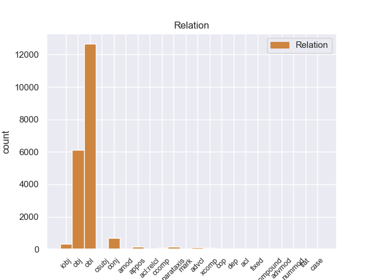
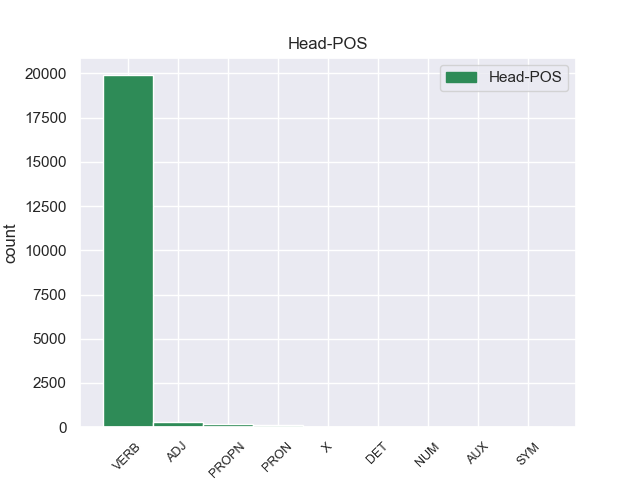
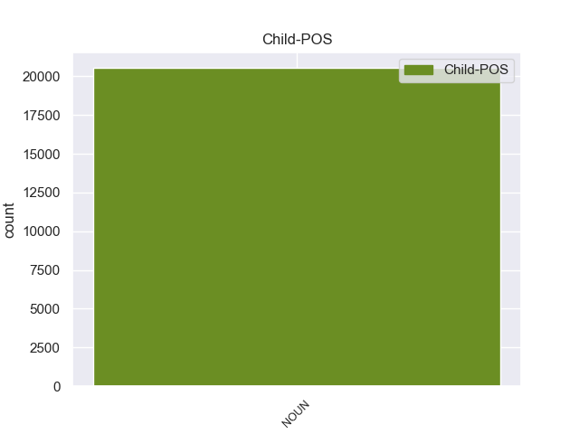

Distribution of features within this leaf



Agreement Rules sorted by frequency.
- When the dependent token is the oblique nominal(obl) of the head token, and the head token is VERB and the dependent token is NOUN.
1 Esta _ _ _ _ 0 _ _ _
2 teoría _ _ _ _ 0 _ _ _
3 se _ _ _ _ 0 _ _ _
4 avenía avenir VERB _ Mood=Ind|Number=Sing|Person=3|Tense=Imp|VerbForm=Fin 0 _ _ _
5 bien _ _ _ _ 0 _ _ _
6 con _ _ _ _ 0 _ _ _
7 la _ _ _ _ 0 _ _ _
8 creencia creencia NOUN _ Gender=Fem|Number=Sing 4 obl _ _
9 de _ _ _ _ 0 _ _ _
10 el _ _ _ _ 0 _ _ _
11 Romanticismo _ _ _ _ 0 _ _ _
12 en _ _ _ _ 0 _ _ _
13 un _ _ _ _ 0 _ _ _
14 volkgeist _ _ _ _ 0 _ _ _
15 , _ _ _ _ 0 _ _ _
16 " _ _ _ _ 0 _ _ _
17 genio _ _ _ _ 0 _ _ _
18 o _ _ _ _ 0 _ _ _
19 espíritu _ _ _ _ 0 _ _ _
20 de _ _ _ _ 0 _ _ _
21 el _ _ _ _ 0 _ _ _
22 pueblo _ _ _ _ 0 _ _ _
23 " _ _ _ _ 0 _ _ _
24 , _ _ _ _ 0 _ _ _
25 autor _ _ _ _ 0 _ _ _
26 colectivo _ _ _ _ 0 _ _ _
27 y _ _ _ _ 0 _ _ _
28 anónimo _ _ _ _ 0 _ _ _
29 de _ _ _ _ 0 _ _ _
30 una _ _ _ _ 0 _ _ _
31 poesía _ _ _ _ 0 _ _ _
32 nacional _ _ _ _ 0 _ _ _
33 . _ _ _ _ 0 _ _ _
1 En _ _ _ _ 0 _ _ _
2 1991 _ _ _ _ 0 _ _ _
3 , _ _ _ _ 0 _ _ _
4 como _ _ _ _ 0 _ _ _
5 ya _ _ _ _ 0 _ _ _
6 está _ _ _ _ 0 _ _ _
7 indicado _ _ _ _ 0 _ _ _
8 en _ _ _ _ 0 _ _ _
9 el _ _ _ _ 0 _ _ _
10 párrafo _ _ _ _ 0 _ _ _
11 anterior _ _ _ _ 0 _ _ _
12 , _ _ _ _ 0 _ _ _
13 se _ _ _ _ 0 _ _ _
14 creó crear VERB _ Mood=Ind|Number=Sing|Person=3|Tense=Past|VerbForm=Fin 0 _ _ _
15 un _ _ _ _ 0 _ _ _
16 equipo equipo NOUN _ Gender=Masc|Number=Sing 14 obj _ _
17 ad _ _ _ _ 0 _ _ _
18 hoc _ _ _ _ 0 _ _ _
19 para _ _ _ _ 0 _ _ _
20 averiguar _ _ _ _ 0 _ _ _
21 como _ _ _ _ 0 _ _ _
22 se _ _ _ _ 0 _ _ _
23 podía _ _ _ _ 0 _ _ _
24 desarrollar _ _ _ _ 0 _ _ _
25 el _ _ _ _ 0 _ _ _
26 Dialogo _ _ _ _ 0 _ _ _
27 Social _ _ _ _ 0 _ _ _
28 , _ _ _ _ 0 _ _ _
29 este _ _ _ _ 0 _ _ _
30 equipo _ _ _ _ 0 _ _ _
31 estaba _ _ _ _ 0 _ _ _
32 formado _ _ _ _ 0 _ _ _
33 por _ _ _ _ 0 _ _ _
34 representantes _ _ _ _ 0 _ _ _
35 de _ _ _ _ 0 _ _ _
36 todas _ _ _ _ 0 _ _ _
37 las _ _ _ _ 0 _ _ _
38 organizaciones _ _ _ _ 0 _ _ _
39 relacionadas _ _ _ _ 0 _ _ _
40 con _ _ _ _ 0 _ _ _
41 CES _ _ _ _ 0 _ _ _
42 , _ _ _ _ 0 _ _ _
43 UNICE _ _ _ _ 0 _ _ _
44 y _ _ _ _ 0 _ _ _
45 CEEP _ _ _ _ 0 _ _ _
46 ; _ _ _ _ 0 _ _ _
1 Aunque _ _ _ _ 0 _ _ _
2 se _ _ _ _ 0 _ _ _
3 puede _ _ _ _ 0 _ _ _
4 decir _ _ _ _ 0 _ _ _
5 que _ _ _ _ 0 _ _ _
6 tanto _ _ _ _ 0 _ _ _
7 el _ _ _ _ 0 _ _ _
8 Cyberpunk _ _ _ _ 0 _ _ _
9 ( _ _ _ _ 0 _ _ _
10 en _ _ _ _ 0 _ _ _
11 este _ _ _ _ 0 _ _ _
12 caso _ _ _ _ 0 _ _ _
13 orientado _ _ _ _ 0 _ _ _
14 con _ _ _ _ 0 _ _ _
15 la _ _ _ _ 0 _ _ _
16 cultura _ _ _ _ 0 _ _ _
17 gótica _ _ _ _ 0 _ _ _
18 ) _ _ _ _ 0 _ _ _
19 y _ _ _ _ 0 _ _ _
20 el _ _ _ _ 0 _ _ _
21 Steampunk _ _ _ _ 0 _ _ _
22 son _ _ _ _ 0 _ _ _
23 como _ _ _ _ 0 _ _ _
24 " _ _ _ _ 0 _ _ _
25 hermanos _ _ _ _ 0 _ _ _
26 lejanos _ _ _ _ 0 _ _ _
27 " _ _ _ _ 0 _ _ _
28 porque _ _ _ _ 0 _ _ _
29 ambas _ _ _ _ 0 _ _ _
30 posturas _ _ _ _ 0 _ _ _
31 se _ _ _ _ 0 _ _ _
32 concentran concentrar VERB _ Mood=Ind|Number=Plur|Person=3|Tense=Pres|VerbForm=Fin 0 _ _ _
33 en _ _ _ _ 0 _ _ _
34 futurismos _ _ _ _ 0 _ _ _
35 , _ _ _ _ 0 _ _ _
36 aunque _ _ _ _ 0 _ _ _
37 en _ _ _ _ 0 _ _ _
38 diferentes _ _ _ _ 0 _ _ _
39 formas forma NOUN _ Gender=Fem|Number=Plur 32 conj _ _
40 ( _ _ _ _ 0 _ _ _
41 retrofuturismo _ _ _ _ 0 _ _ _
42 y _ _ _ _ 0 _ _ _
43 profuturismo _ _ _ _ 0 _ _ _
44 , _ _ _ _ 0 _ _ _
45 respectivamente _ _ _ _ 0 _ _ _
46 ) _ _ _ _ 0 _ _ _
47 . _ _ _ _ 0 _ _ _
1 A _ _ _ _ 0 _ _ _
2 estos _ _ _ _ 0 _ _ _
3 retablos retablo NOUN _ Gender=Masc|Number=Plur 4 iobj _ _
4 pertenecen pertenecer VERB _ Mood=Ind|Number=Plur|Person=3|Tense=Pres|VerbForm=Fin 0 _ _ _
5 los _ _ _ _ 0 _ _ _
6 cuadros _ _ _ _ 0 _ _ _
7 San _ _ _ _ 0 _ _ _
8 José _ _ _ _ 0 _ _ _
9 con _ _ _ _ 0 _ _ _
10 el _ _ _ _ 0 _ _ _
11 Niño _ _ _ _ 0 _ _ _
12 Jesús _ _ _ _ 0 _ _ _
13 , _ _ _ _ 0 _ _ _
14 San _ _ _ _ 0 _ _ _
15 Martín _ _ _ _ 0 _ _ _
16 y _ _ _ _ 0 _ _ _
17 el _ _ _ _ 0 _ _ _
18 mendigo _ _ _ _ 0 _ _ _
19 y _ _ _ _ 0 _ _ _
20 la _ _ _ _ 0 _ _ _
21 Virgen _ _ _ _ 0 _ _ _
22 con _ _ _ _ 0 _ _ _
23 el _ _ _ _ 0 _ _ _
24 Niño _ _ _ _ 0 _ _ _
25 y _ _ _ _ 0 _ _ _
26 las _ _ _ _ 0 _ _ _
27 santas _ _ _ _ 0 _ _ _
28 Inés _ _ _ _ 0 _ _ _
29 y _ _ _ _ 0 _ _ _
30 Martina _ _ _ _ 0 _ _ _
31 . _ _ _ _ 0 _ _ _
1 La _ _ _ _ 0 _ _ _
2 experimentación _ _ _ _ 0 _ _ _
3 de _ _ _ _ 0 _ _ _
4 Torres _ _ _ _ 0 _ _ _
5 Quevedo _ _ _ _ 0 _ _ _
6 en _ _ _ _ 0 _ _ _
7 el _ _ _ _ 0 _ _ _
8 área _ _ _ _ 0 _ _ _
9 de _ _ _ _ 0 _ _ _
10 transbordadores _ _ _ _ 0 _ _ _
11 , _ _ _ _ 0 _ _ _
12 funiculares funicular ADJ _ Gender=Masc|Number=Plur 0 _ _ _
13 o _ _ _ _ 0 _ _ _
14 teleféricos teleférico NOUN _ Gender=Masc|Number=Plur 12 conj _ SpaceAfter=No
15 , _ _ _ _ 0 _ _ _
16 comenzó _ _ _ _ 0 _ _ _
17 muy _ _ _ _ 0 _ _ _
18 pronto _ _ _ _ 0 _ _ _
19 durante _ _ _ _ 0 _ _ _
20 su _ _ _ _ 0 _ _ _
21 residencia _ _ _ _ 0 _ _ _
22 en _ _ _ _ 0 _ _ _
23 su _ _ _ _ 0 _ _ _
24 pueblo _ _ _ _ 0 _ _ _
25 natal _ _ _ _ 0 _ _ _
26 , _ _ _ _ 0 _ _ _
27 Molledo _ _ _ _ 0 _ _ _
28 . _ _ _ _ 0 _ _ _
1 Cada _ _ _ _ 0 _ _ _
2 señal _ _ _ _ 0 _ _ _
3 que _ _ _ _ 0 _ _ _
4 el _ _ _ _ 0 _ _ _
5 caporal _ _ _ _ 0 _ _ _
6 hace _ _ _ _ 0 _ _ _
7 es _ _ _ _ 0 _ _ _
8 un _ _ _ _ 0 _ _ _
9 tipo _ _ _ _ 0 _ _ _
10 de _ _ _ _ 0 _ _ _
11 acrobacia _ _ _ _ 0 _ _ _
12 , _ _ _ _ 0 _ _ _
13 en _ _ _ _ 0 _ _ _
14 una _ _ _ _ 0 _ _ _
15 de _ _ _ _ 0 _ _ _
16 ellas _ _ _ _ 0 _ _ _
17 cada _ _ _ _ 0 _ _ _
18 danzante _ _ _ _ 0 _ _ _
19 volador _ _ _ _ 0 _ _ _
20 salta _ _ _ _ 0 _ _ _
21 a _ _ _ _ 0 _ _ _
22 el _ _ _ _ 0 _ _ _
23 vacío _ _ _ _ 0 _ _ _
24 , _ _ _ _ 0 _ _ _
25 sujetado _ _ _ _ 0 _ _ _
26 por _ _ _ _ 0 _ _ _
27 la _ _ _ _ 0 _ _ _
28 cintura _ _ _ _ 0 _ _ _
29 , _ _ _ _ 0 _ _ _
30 boca _ _ _ _ 0 _ _ _
31 abajo _ _ _ _ 0 _ _ _
32 y _ _ _ _ 0 _ _ _
33 afianzándo _ _ _ _ 0 _ _ _
34 se _ _ _ _ 0 _ _ _
35 con _ _ _ _ 0 _ _ _
36 las _ _ _ _ 0 _ _ _
37 piernas _ _ _ _ 0 _ _ _
38 y _ _ _ _ 0 _ _ _
39 gira _ _ _ _ 0 _ _ _
40 13 _ _ _ _ 0 _ _ _
41 veces _ _ _ _ 0 _ _ _
42 cada _ _ _ _ 0 _ _ _
43 uno _ _ _ _ 0 _ _ _
44 de _ _ _ _ 0 _ _ _
45 ellos _ _ _ _ 0 _ _ _
46 , _ _ _ _ 0 _ _ _
47 que _ _ _ _ 0 _ _ _
48 multiplicado _ _ _ _ 0 _ _ _
49 por _ _ _ _ 0 _ _ _
50 los _ _ _ _ 0 _ _ _
51 cuatro _ _ _ _ 0 _ _ _
52 voladores _ _ _ _ 0 _ _ _
53 da dar VERB _ Mood=Ind|Number=Sing|Person=3|Tense=Pres|VerbForm=Fin 0 _ _ _
54 el _ _ _ _ 0 _ _ _
55 resultado _ _ _ _ 0 _ _ _
56 de _ _ _ _ 0 _ _ _
57 52 _ _ _ _ 0 _ _ _
58 , _ _ _ _ 0 _ _ _
59 ya _ _ _ _ 0 _ _ _
60 que _ _ _ _ 0 _ _ _
61 este _ _ _ _ 0 _ _ _
62 número _ _ _ _ 0 _ _ _
63 es _ _ _ _ 0 _ _ _
64 el _ _ _ _ 0 _ _ _
65 símbolo símbolo NOUN _ Gender=Masc|Number=Sing 53 advcl _ _
66 de _ _ _ _ 0 _ _ _
67 el _ _ _ _ 0 _ _ _
68 ciclo _ _ _ _ 0 _ _ _
69 de _ _ _ _ 0 _ _ _
70 52 _ _ _ _ 0 _ _ _
71 años _ _ _ _ 0 _ _ _
72 de _ _ _ _ 0 _ _ _
73 el _ _ _ _ 0 _ _ _
74 calendario _ _ _ _ 0 _ _ _
75 indígena _ _ _ _ 0 _ _ _
76 o _ _ _ _ 0 _ _ _
77 Xiuhmolpilli _ _ _ _ 0 _ _ _
78 . _ _ _ _ 0 _ _ _
1 Johnnie johnnie PROPN _ Gender=Masc|Number=Sing 0 _ _ _
2 Cochran _ _ _ _ 0 _ _ _
3 , _ _ _ _ 0 _ _ _
4 un _ _ _ _ 0 _ _ _
5 abogado abogado NOUN _ Gender=Masc|Number=Sing 1 appos _ _
6 famoso _ _ _ _ 0 _ _ _
7 quién _ _ _ _ 0 _ _ _
8 representó _ _ _ _ 0 _ _ _
9 ( _ _ _ _ 0 _ _ _
10 junto _ _ _ _ 0 _ _ _
11 a _ _ _ _ 0 _ _ _
12 otros _ _ _ _ 0 _ _ _
13 ) _ _ _ _ 0 _ _ _
14 a _ _ _ _ 0 _ _ _
15 estrellas _ _ _ _ 0 _ _ _
16 cómo _ _ _ _ 0 _ _ _
17 O.J. _ _ _ _ 0 _ _ _
18 Simpson _ _ _ _ 0 _ _ _
19 , _ _ _ _ 0 _ _ _
20 quién _ _ _ _ 0 _ _ _
21 fue _ _ _ _ 0 _ _ _
22 absuelto _ _ _ _ 0 _ _ _
23 de _ _ _ _ 0 _ _ _
24 asesinar _ _ _ _ 0 _ _ _
25 a _ _ _ _ 0 _ _ _
26 su _ _ _ _ 0 _ _ _
27 ex _ _ _ _ 0 _ _ _
28 esposa _ _ _ _ 0 _ _ _
29 Nicola _ _ _ _ 0 _ _ _
30 Brown _ _ _ _ 0 _ _ _
31 . _ _ _ _ 0 _ _ _
1 En _ _ _ _ 0 _ _ _
2 este _ _ _ _ 0 _ _ _
3 contexto _ _ _ _ 0 _ _ _
4 , _ _ _ _ 0 _ _ _
5 el _ _ _ _ 0 _ _ _
6 prelado _ _ _ _ 0 _ _ _
7 destacó destacar VERB _ Mood=Ind|Number=Sing|Person=3|Tense=Past|VerbForm=Fin 0 _ _ _
8 que _ _ _ _ 0 _ _ _
9 el _ _ _ _ 0 _ _ _
10 pueblo _ _ _ _ 0 _ _ _
11 santiagueño _ _ _ _ 0 _ _ _
12 es _ _ _ _ 0 _ _ _
13 " _ _ _ _ 0 _ _ _
14 modelo modelo NOUN _ Gender=Masc|Number=Sing 7 ccomp _ _
15 de _ _ _ _ 0 _ _ _
16 el _ _ _ _ 0 _ _ _
17 discípulo _ _ _ _ 0 _ _ _
18 misionero _ _ _ _ 0 _ _ _
19 que _ _ _ _ 0 _ _ _
20 todos _ _ _ _ 0 _ _ _
21 tenemos _ _ _ _ 0 _ _ _
22 que _ _ _ _ 0 _ _ _
23 ser _ _ _ _ 0 _ _ _
24 " _ _ _ _ 0 _ _ _
25 . _ _ _ _ 0 _ _ _
1 La _ _ _ _ 0 _ _ _
2 primera _ _ _ _ 0 _ _ _
3 vez _ _ _ _ 0 _ _ _
4 , _ _ _ _ 0 _ _ _
5 tenía tener VERB _ Mood=Ind|Number=Sing|Person=3|Tense=Imp|VerbForm=Fin 0 _ _ _
6 un _ _ _ _ 0 _ _ _
7 presupuesto _ _ _ _ 0 _ _ _
8 de _ _ _ _ 0 _ _ _
9 700 _ _ _ _ 0 _ _ _
10 € _ _ _ _ 0 _ _ _
11 en _ _ _ _ 0 _ _ _
12 el _ _ _ _ 0 _ _ _
13 servicio _ _ _ _ 0 _ _ _
14 oficial _ _ _ _ 0 _ _ _
15 ( _ _ _ _ 0 _ _ _
16 te _ _ _ _ 0 _ _ _
17 lo _ _ _ _ 0 _ _ _
18 cambio cambio NOUN _ Number=Sing 5 parataxis _ _
19 todo _ _ _ _ 0 _ _ _
20 y _ _ _ _ 0 _ _ _
21 soluciono _ _ _ _ 0 _ _ _
22 el _ _ _ _ 0 _ _ _
23 problema _ _ _ _ 0 _ _ _
24 ) _ _ _ _ 0 _ _ _
25 , _ _ _ _ 0 _ _ _
26 y _ _ _ _ 0 _ _ _
27 en _ _ _ _ 0 _ _ _
28 Pinauto _ _ _ _ 0 _ _ _
29 me _ _ _ _ 0 _ _ _
30 lo _ _ _ _ 0 _ _ _
31 solucionaron _ _ _ _ 0 _ _ _
32 por _ _ _ _ 0 _ _ _
33 unos _ _ _ _ 0 _ _ _
34 200 _ _ _ _ 0 _ _ _
35 € _ _ _ _ 0 _ _ _
36 , _ _ _ _ 0 _ _ _
37 cambiando _ _ _ _ 0 _ _ _
38 sólo _ _ _ _ 0 _ _ _
39 lo _ _ _ _ 0 _ _ _
40 necesario _ _ _ _ 0 _ _ _
41 . _ _ _ _ 0 _ _ _
1 La _ _ _ _ 0 _ _ _
2 reconstrucción _ _ _ _ 0 _ _ _
3 de _ _ _ _ 0 _ _ _
4 el _ _ _ _ 0 _ _ _
5 sistema _ _ _ _ 0 _ _ _
6 educativo _ _ _ _ 0 _ _ _
7 sigue seguir VERB _ Mood=Ind|Number=Sing|Person=3|Tense=Pres|VerbForm=Fin 0 _ _ _
8 siendo _ _ _ _ 0 _ _ _
9 una _ _ _ _ 0 _ _ _
10 prioridad prioridad NOUN _ Gender=Fem|Number=Sing 7 xcomp _ _
11 de _ _ _ _ 0 _ _ _
12 el _ _ _ _ 0 _ _ _
13 gobierno _ _ _ _ 0 _ _ _
14 de _ _ _ _ 0 _ _ _
15 Ruanda _ _ _ _ 0 _ _ _
16 . _ _ _ _ 0 _ _ _
1 Las _ _ _ _ 0 _ _ _
2 primeras _ _ _ _ 0 _ _ _
3 dos _ _ _ _ 0 _ _ _
4 cisteínas _ _ _ _ 0 _ _ _
5 de _ _ _ _ 0 _ _ _
6 una _ _ _ _ 0 _ _ _
7 quimiocina _ _ _ _ 0 _ _ _
8 están _ _ _ _ 0 _ _ _
9 muy _ _ _ _ 0 _ _ _
10 juntas _ _ _ _ 0 _ _ _
11 y _ _ _ _ 0 _ _ _
12 se _ _ _ _ 0 _ _ _
13 encuentran _ _ _ _ 0 _ _ _
14 situadas _ _ _ _ 0 _ _ _
15 cerca _ _ _ _ 0 _ _ _
16 de _ _ _ _ 0 _ _ _
17 el _ _ _ _ 0 _ _ _
18 extremo _ _ _ _ 0 _ _ _
19 N _ _ _ _ 0 _ _ _
20 terminal _ _ _ _ 0 _ _ _
21 de _ _ _ _ 0 _ _ _
22 la _ _ _ _ 0 _ _ _
23 proteína _ _ _ _ 0 _ _ _
24 madura _ _ _ _ 0 _ _ _
25 , _ _ _ _ 0 _ _ _
26 con _ _ _ _ 0 _ _ _
27 la _ _ _ _ 0 _ _ _
28 tercera _ _ _ _ 0 _ _ _
29 cisteína cisteína PROPN _ Gender=Fem|Number=Sing 0 _ _ _
30 situada _ _ _ _ 0 _ _ _
31 en _ _ _ _ 0 _ _ _
32 el _ _ _ _ 0 _ _ _
33 centro _ _ _ _ 0 _ _ _
34 de _ _ _ _ 0 _ _ _
35 la _ _ _ _ 0 _ _ _
36 molécula _ _ _ _ 0 _ _ _
37 y _ _ _ _ 0 _ _ _
38 la _ _ _ _ 0 _ _ _
39 cuarta cuarto NOUN _ Gender=Fem|Number=Sing 29 conj _ _
40 cerca _ _ _ _ 0 _ _ _
41 de _ _ _ _ 0 _ _ _
42 el _ _ _ _ 0 _ _ _
43 extremo _ _ _ _ 0 _ _ _
44 C _ _ _ _ 0 _ _ _
45 terminal _ _ _ _ 0 _ _ _
46 . _ _ _ _ 0 _ _ _
1 El _ _ _ _ 0 _ _ _
2 Santuario _ _ _ _ 0 _ _ _
3 de _ _ _ _ 0 _ _ _
4 Fauna _ _ _ _ 0 _ _ _
5 y _ _ _ _ 0 _ _ _
6 Flora _ _ _ _ 0 _ _ _
7 los _ _ _ _ 0 _ _ _
8 Colorados _ _ _ _ 0 _ _ _
9 es _ _ _ _ 0 _ _ _
10 una _ _ _ _ 0 _ _ _
11 pequeña _ _ _ _ 0 _ _ _
12 zona _ _ _ _ 0 _ _ _
13 protegida _ _ _ _ 0 _ _ _
14 de _ _ _ _ 0 _ _ _
15 el _ _ _ _ 0 _ _ _
16 norte _ _ _ _ 0 _ _ _
17 de _ _ _ _ 0 _ _ _
18 Colombia _ _ _ _ 0 _ _ _
19 , _ _ _ _ 0 _ _ _
20 pero _ _ _ _ 0 _ _ _
21 de _ _ _ _ 0 _ _ _
22 enorme _ _ _ _ 0 _ _ _
23 importancia _ _ _ _ 0 _ _ _
24 ecológica _ _ _ _ 0 _ _ _
25 ya _ _ _ _ 0 _ _ _
26 que _ _ _ _ 0 _ _ _
27 en _ _ _ _ 0 _ _ _
28 ella _ _ _ _ 0 _ _ _
29 se _ _ _ _ 0 _ _ _
30 protege _ _ _ _ 0 _ _ _
31 uno uno PRON _ Gender=Masc|Number=Sing|PronType=Ind 0 _ _ _
32 de _ _ _ _ 0 _ _ _
33 los _ _ _ _ 0 _ _ _
34 últimos _ _ _ _ 0 _ _ _
35 bosques _ _ _ _ 0 _ _ _
36 nativos _ _ _ _ 0 _ _ _
37 que _ _ _ _ 0 _ _ _
38 permanecen _ _ _ _ 0 _ _ _
39 aún _ _ _ _ 0 _ _ _
40 en _ _ _ _ 0 _ _ _
41 pie _ _ _ _ 0 _ _ _
42 de _ _ _ _ 0 _ _ _
43 la _ _ _ _ 0 _ _ _
44 serranía _ _ _ _ 0 _ _ _
45 conocida _ _ _ _ 0 _ _ _
46 como _ _ _ _ 0 _ _ _
47 Montes _ _ _ _ 0 _ _ _
48 de _ _ _ _ 0 _ _ _
49 María _ _ _ _ 0 _ _ _
50 , _ _ _ _ 0 _ _ _
51 además _ _ _ _ 0 _ _ _
52 de _ _ _ _ 0 _ _ _
53 una _ _ _ _ 0 _ _ _
54 multitud multitud NOUN _ Gender=Fem|Number=Sing 31 conj _ _
55 de _ _ _ _ 0 _ _ _
56 monos _ _ _ _ 0 _ _ _
57 en _ _ _ _ 0 _ _ _
58 peligro _ _ _ _ 0 _ _ _
59 de _ _ _ _ 0 _ _ _
60 extinción _ _ _ _ 0 _ _ _
61 , _ _ _ _ 0 _ _ _
62 en _ _ _ _ 0 _ _ _
63 particular _ _ _ _ 0 _ _ _
64 de _ _ _ _ 0 _ _ _
65 la _ _ _ _ 0 _ _ _
66 especie _ _ _ _ 0 _ _ _
67 de _ _ _ _ 0 _ _ _
68 el _ _ _ _ 0 _ _ _
69 mono _ _ _ _ 0 _ _ _
70 colorado _ _ _ _ 0 _ _ _
71 , _ _ _ _ 0 _ _ _
72 de _ _ _ _ 0 _ _ _
73 el _ _ _ _ 0 _ _ _
74 cual _ _ _ _ 0 _ _ _
75 toma _ _ _ _ 0 _ _ _
76 su _ _ _ _ 0 _ _ _
77 nombre _ _ _ _ 0 _ _ _
78 . _ _ _ _ 0 _ _ _
1 Se _ _ _ _ 0 _ _ _
2 encuentran _ _ _ _ 0 _ _ _
3 en _ _ _ _ 0 _ _ _
4 fase _ _ _ _ 0 _ _ _
5 de _ _ _ _ 0 _ _ _
6 experimentación _ _ _ _ 0 _ _ _
7 , _ _ _ _ 0 _ _ _
8 y _ _ _ _ 0 _ _ _
9 se _ _ _ _ 0 _ _ _
10 prevé prever VERB _ Mood=Ind|Number=Sing|Person=3|Tense=Pres|VerbForm=Fin 0 _ _ _
11 que _ _ _ _ 0 _ _ _
12 una _ _ _ _ 0 _ _ _
13 de _ _ _ _ 0 _ _ _
14 sus _ _ _ _ 0 _ _ _
15 funciones _ _ _ _ 0 _ _ _
16 fundamentales _ _ _ _ 0 _ _ _
17 sería _ _ _ _ 0 _ _ _
18 la _ _ _ _ 0 _ _ _
19 eliminación eliminación NOUN _ Gender=Fem|Number=Sing 10 csubj _ _
20 de _ _ _ _ 0 _ _ _
21 los _ _ _ _ 0 _ _ _
22 residuos _ _ _ _ 0 _ _ _
23 nucleares _ _ _ _ 0 _ _ _
24 producidos _ _ _ _ 0 _ _ _
25 en _ _ _ _ 0 _ _ _
26 otros _ _ _ _ 0 _ _ _
27 reactores _ _ _ _ 0 _ _ _
28 de _ _ _ _ 0 _ _ _
29 fisión _ _ _ _ 0 _ _ _
30 . _ _ _ _ 0 _ _ _
1 Este este PRON _ Gender=Masc|Number=Sing|PronType=Dem 0 _ _ _
2 que _ _ _ _ 0 _ _ _
3 ha _ _ _ _ 0 _ _ _
4 sido _ _ _ _ 0 _ _ _
5 la _ _ _ _ 0 _ _ _
6 sensación sensación NOUN _ Gender=Fem|Number=Sing 1 acl:relcl _ _
7 de _ _ _ _ 0 _ _ _
8 el _ _ _ _ 0 _ _ _
9 Mallorca _ _ _ _ 0 _ _ _
10 dejará _ _ _ _ 0 _ _ _
11 el _ _ _ _ 0 _ _ _
12 club _ _ _ _ 0 _ _ _
13 balear _ _ _ _ 0 _ _ _
14 dejando _ _ _ _ 0 _ _ _
15 dinero _ _ _ _ 0 _ _ _
16 en _ _ _ _ 0 _ _ _
17 las _ _ _ _ 0 _ _ _
18 arcas _ _ _ _ 0 _ _ _
19 y _ _ _ _ 0 _ _ _
20 intentarán _ _ _ _ 0 _ _ _
21 cerrar _ _ _ _ 0 _ _ _
22 dos _ _ _ _ 0 _ _ _
23 fichajes _ _ _ _ 0 _ _ _
24 con _ _ _ _ 0 _ _ _
25 dicho _ _ _ _ 0 _ _ _
26 montante _ _ _ _ 0 _ _ _
27 que _ _ _ _ 0 _ _ _
28 debe _ _ _ _ 0 _ _ _
29 llegar _ _ _ _ 0 _ _ _
30 pronto _ _ _ _ 0 _ _ _
31 . _ _ _ _ 0 _ _ _
1 Una _ _ _ _ 0 _ _ _
2 vez vez NOUN _ Gender=Fem|Number=Sing 3 mark _ _
3 comprobado comprobar VERB _ Gender=Masc|Number=Sing|Tense=Past|VerbForm=Part 0 _ _ _
4 que _ _ _ _ 0 _ _ _
5 el _ _ _ _ 0 _ _ _
6 interesado _ _ _ _ 0 _ _ _
7 fue _ _ _ _ 0 _ _ _
8 uno _ _ _ _ 0 _ _ _
9 de _ _ _ _ 0 _ _ _
10 los _ _ _ _ 0 _ _ _
11 afectados _ _ _ _ 0 _ _ _
12 , _ _ _ _ 0 _ _ _
13 se _ _ _ _ 0 _ _ _
14 les _ _ _ _ 0 _ _ _
15 facilitará _ _ _ _ 0 _ _ _
16 un _ _ _ _ 0 _ _ _
17 billete _ _ _ _ 0 _ _ _
18 . _ _ _ _ 0 _ _ _
1 Nosotros yo PRON _ Case=Acc,Nom|Gender=Masc|Number=Plur|Person=1|PronType=Prs 0 _ _ _
2 , _ _ _ _ 0 _ _ _
3 veteranos veterano NOUN _ Gender=Masc|Number=Plur 1 appos _ _
4 de _ _ _ _ 0 _ _ _
5 la _ _ _ _ 0 _ _ _
6 Resistencia _ _ _ _ 0 _ _ _
7 y _ _ _ _ 0 _ _ _
8 de _ _ _ _ 0 _ _ _
9 las _ _ _ _ 0 _ _ _
10 fuerzas _ _ _ _ 0 _ _ _
11 combatientes _ _ _ _ 0 _ _ _
12 de _ _ _ _ 0 _ _ _
13 la _ _ _ _ 0 _ _ _
14 Francia _ _ _ _ 0 _ _ _
15 libre _ _ _ _ 0 _ _ _
16 , _ _ _ _ 0 _ _ _
17 apelamos _ _ _ _ 0 _ _ _
18 a _ _ _ _ 0 _ _ _
19 las _ _ _ _ 0 _ _ _
20 jóvenes _ _ _ _ 0 _ _ _
21 generaciones _ _ _ _ 0 _ _ _
22 para _ _ _ _ 0 _ _ _
23 que _ _ _ _ 0 _ _ _
24 den _ _ _ _ 0 _ _ _
25 vida _ _ _ _ 0 _ _ _
26 a _ _ _ _ 0 _ _ _
27 estos _ _ _ _ 0 _ _ _
28 ideales _ _ _ _ 0 _ _ _
29 y _ _ _ _ 0 _ _ _
30 para _ _ _ _ 0 _ _ _
31 que _ _ _ _ 0 _ _ _
32 los _ _ _ _ 0 _ _ _
33 transmitan _ _ _ _ 0 _ _ _
34 . _ _ _ _ 0 _ _ _
1 De _ _ _ _ 0 _ _ _
2 la _ _ _ _ 0 _ _ _
3 Vega _ _ _ _ 0 _ _ _
4 ha _ _ _ _ 0 _ _ _
5 pedido _ _ _ _ 0 _ _ _
6 respetar _ _ _ _ 0 _ _ _
7 los _ _ _ _ 0 _ _ _
8 tiempos _ _ _ _ 0 _ _ _
9 de _ _ _ _ 0 _ _ _
10 los _ _ _ _ 0 _ _ _
11 procesos _ _ _ _ 0 _ _ _
12 y _ _ _ _ 0 _ _ _
13 de _ _ _ _ 0 _ _ _
14 la _ _ _ _ 0 _ _ _
15 misma _ _ _ _ 0 _ _ _
16 manera _ _ _ _ 0 _ _ _
17 que _ _ _ _ 0 _ _ _
18 no _ _ _ _ 0 _ _ _
19 ha _ _ _ _ 0 _ _ _
20 querido _ _ _ _ 0 _ _ _
21 entrar _ _ _ _ 0 _ _ _
22 en _ _ _ _ 0 _ _ _
23 la _ _ _ _ 0 _ _ _
24 salida _ _ _ _ 0 _ _ _
25 de _ _ _ _ 0 _ _ _
26 Corbacho _ _ _ _ 0 _ _ _
27 , _ _ _ _ 0 _ _ _
28 tampoco _ _ _ _ 0 _ _ _
29 lo _ _ _ _ 0 _ _ _
30 ha _ _ _ _ 0 _ _ _
31 hecho hacer VERB _ Gender=Masc|Number=Sing|Tense=Past|VerbForm=Part 0 _ _ _
32 la _ _ _ _ 0 _ _ _
33 posible _ _ _ _ 0 _ _ _
34 salida salida NOUN _ Gender=Fem|Number=Sing 31 dep _ _
35 de _ _ _ _ 0 _ _ _
36 Trinidad _ _ _ _ 0 _ _ _
37 Jiménez _ _ _ _ 0 _ _ _
38 , _ _ _ _ 0 _ _ _
39 que _ _ _ _ 0 _ _ _
40 le _ _ _ _ 0 _ _ _
41 acompañaba _ _ _ _ 0 _ _ _
42 en _ _ _ _ 0 _ _ _
43 la _ _ _ _ 0 _ _ _
44 sala _ _ _ _ 0 _ _ _
45 de _ _ _ _ 0 _ _ _
46 prensa _ _ _ _ 0 _ _ _
47 . _ _ _ _ 0 _ _ _
1 La _ _ _ _ 0 _ _ _
2 banda _ _ _ _ 0 _ _ _
3 norteamericana _ _ _ _ 0 _ _ _
4 Red _ _ _ _ 0 _ _ _
5 Hot _ _ _ _ 0 _ _ _
6 Chili _ _ _ _ 0 _ _ _
7 Peppers _ _ _ _ 0 _ _ _
8 dejó _ _ _ _ 0 _ _ _
9 boquiabiertas _ _ _ _ 0 _ _ _
10 a _ _ _ _ 0 _ _ _
11 las _ _ _ _ 0 _ _ _
12 18.000 _ _ _ _ 0 _ _ _
13 personas _ _ _ _ 0 _ _ _
14 congregadas _ _ _ _ 0 _ _ _
15 en _ _ _ _ 0 _ _ _
16 el _ _ _ _ 0 _ _ _
17 concierto _ _ _ _ 0 _ _ _
18 que _ _ _ _ 0 _ _ _
19 ofreció _ _ _ _ 0 _ _ _
20 la _ _ _ _ 0 _ _ _
21 noche _ _ _ _ 0 _ _ _
22 de _ _ _ _ 0 _ _ _
23 el _ _ _ _ 0 _ _ _
24 sábado _ _ _ _ 0 _ _ _
25 17 _ _ _ _ 0 _ _ _
26 de _ _ _ _ 0 _ _ _
27 diciembre _ _ _ _ 0 _ _ _
28 en _ _ _ _ 0 _ _ _
29 el _ _ _ _ 0 _ _ _
30 madrileño _ _ _ _ 0 _ _ _
31 Palacio _ _ _ _ 0 _ _ _
32 de _ _ _ _ 0 _ _ _
33 los _ _ _ _ 0 _ _ _
34 Deportes _ _ _ _ 0 _ _ _
35 con _ _ _ _ 0 _ _ _
36 unos _ _ _ _ 0 _ _ _
37 teloneros _ _ _ _ 0 _ _ _
38 de _ _ _ _ 0 _ _ _
39 pro pro X _ Gender=Masc|Number=Sing 0 _ _ _
40 , _ _ _ _ 0 _ _ _
41 lujo _ _ _ _ 0 _ _ _
42 y _ _ _ _ 0 _ _ _
43 exquisitez exquisitez NOUN _ Gender=Fem|Number=Sing 39 conj _ _
44 interpretativa _ _ _ _ 0 _ _ _
45 : _ _ _ _ 0 _ _ _
46 Foals _ _ _ _ 0 _ _ _
47 . _ _ _ _ 0 _ _ _
1 Su _ _ _ _ 0 _ _ _
2 cláusula _ _ _ _ 0 _ _ _
3 es _ _ _ _ 0 _ _ _
4 de _ _ _ _ 0 _ _ _
5 poco _ _ _ _ 0 _ _ _
6 más _ _ _ _ 0 _ _ _
7 de _ _ _ _ 0 _ _ _
8 8 _ _ _ _ 0 _ _ _
9 millones _ _ _ _ 0 _ _ _
10 de _ _ _ _ 0 _ _ _
11 euros _ _ _ _ 0 _ _ _
12 y _ _ _ _ 0 _ _ _
13 termina terminar VERB _ Mood=Ind|Number=Sing|Person=3|Tense=Pres|VerbForm=Fin 0 _ _ _
14 contrato _ _ _ _ 0 _ _ _
15 en _ _ _ _ 0 _ _ _
16 2012 _ _ _ _ 0 _ _ _
17 , _ _ _ _ 0 _ _ _
18 cosa cosa NOUN _ Gender=Fem|Number=Sing 13 appos _ _
19 que _ _ _ _ 0 _ _ _
20 puede _ _ _ _ 0 _ _ _
21 que _ _ _ _ 0 _ _ _
22 se _ _ _ _ 0 _ _ _
23 acelere _ _ _ _ 0 _ _ _
24 su _ _ _ _ 0 _ _ _
25 venta _ _ _ _ 0 _ _ _
26 si _ _ _ _ 0 _ _ _
27 no _ _ _ _ 0 _ _ _
28 renueva _ _ _ _ 0 _ _ _
29 de _ _ _ _ 0 _ _ _
30 forma _ _ _ _ 0 _ _ _
31 inminentemente _ _ _ _ 0 _ _ _
32 . _ _ _ _ 0 _ _ _
1 La _ _ _ _ 0 _ _ _
2 localidad _ _ _ _ 0 _ _ _
3 se _ _ _ _ 0 _ _ _
4 encuentra _ _ _ _ 0 _ _ _
5 emplazada _ _ _ _ 0 _ _ _
6 en _ _ _ _ 0 _ _ _
7 el _ _ _ _ 0 _ _ _
8 extremo extremo ADJ _ Gender=Masc|Number=Sing 0 _ _ _
9 norte norte NOUN _ Number=Sing 8 appos _ _
10 de _ _ _ _ 0 _ _ _
11 el _ _ _ _ 0 _ _ _
12 departamento _ _ _ _ 0 _ _ _
13 de _ _ _ _ 0 _ _ _
14 Flores _ _ _ _ 0 _ _ _
15 , _ _ _ _ 0 _ _ _
16 sobre _ _ _ _ 0 _ _ _
17 ruta _ _ _ _ 0 _ _ _
18 3 _ _ _ _ 0 _ _ _
19 , _ _ _ _ 0 _ _ _
20 próximo _ _ _ _ 0 _ _ _
21 a _ _ _ _ 0 _ _ _
22 el _ _ _ _ 0 _ _ _
23 embalse _ _ _ _ 0 _ _ _
24 artificial _ _ _ _ 0 _ _ _
25 de _ _ _ _ 0 _ _ _
26 la _ _ _ _ 0 _ _ _
27 Represa _ _ _ _ 0 _ _ _
28 de _ _ _ _ 0 _ _ _
29 Palmar _ _ _ _ 0 _ _ _
30 . _ _ _ _ 0 _ _ _
1 Además _ _ _ _ 0 _ _ _
2 el _ _ _ _ 0 _ _ _
3 sitio _ _ _ _ 0 _ _ _
4 es _ _ _ _ 0 _ _ _
5 precioso precioso ADJ _ Gender=Masc|Number=Sing 0 _ _ _
6 , _ _ _ _ 0 _ _ _
7 un _ _ _ _ 0 _ _ _
8 pueblecito pueblecito NOUN _ Gender=Masc|Number=Sing 5 parataxis _ _
9 muy _ _ _ _ 0 _ _ _
10 pequeño _ _ _ _ 0 _ _ _
11 rodeado _ _ _ _ 0 _ _ _
12 de _ _ _ _ 0 _ _ _
13 vegetación _ _ _ _ 0 _ _ _
14 . _ _ _ _ 0 _ _ _
1 El _ _ _ _ 0 _ _ _
2 reconocimiento _ _ _ _ 0 _ _ _
3 internacional _ _ _ _ 0 _ _ _
4 de _ _ _ _ 0 _ _ _
5 Kalatózov _ _ _ _ 0 _ _ _
6 llegó _ _ _ _ 0 _ _ _
7 con _ _ _ _ 0 _ _ _
8 el _ _ _ _ 0 _ _ _
9 estreno _ _ _ _ 0 _ _ _
10 de _ _ _ _ 0 _ _ _
11 el _ _ _ _ 0 _ _ _
12 melodrama _ _ _ _ 0 _ _ _
13 Cuando _ _ _ _ 0 _ _ _
14 pasan _ _ _ _ 0 _ _ _
15 las _ _ _ _ 0 _ _ _
16 cigüeñas _ _ _ _ 0 _ _ _
17 ( _ _ _ _ 0 _ _ _
18 Letyat _ _ _ _ 0 _ _ _
19 zhuravlí _ _ _ _ 0 _ _ _
20 , _ _ _ _ 0 _ _ _
21 1957 _ _ _ _ 0 _ _ _
22 ) _ _ _ _ 0 _ _ _
23 considerada considerar ADJ _ Gender=Fem|Number=Sing|VerbForm=Part 0 _ _ _
24 la _ _ _ _ 0 _ _ _
25 primera primero NOUN _ Gender=Fem|Number=Sing 23 obj _ _
26 de _ _ _ _ 0 _ _ _
27 sus _ _ _ _ 0 _ _ _
28 obras _ _ _ _ 0 _ _ _
29 maestras _ _ _ _ 0 _ _ _
30 y _ _ _ _ 0 _ _ _
31 uno _ _ _ _ 0 _ _ _
32 de _ _ _ _ 0 _ _ _
33 los _ _ _ _ 0 _ _ _
34 hitos _ _ _ _ 0 _ _ _
35 de _ _ _ _ 0 _ _ _
36 el _ _ _ _ 0 _ _ _
37 cine _ _ _ _ 0 _ _ _
38 soviético _ _ _ _ 0 _ _ _
39 . _ _ _ _ 0 _ _ _
1 Pero _ _ _ _ 0 _ _ _
2 las _ _ _ _ 0 _ _ _
3 comisiones _ _ _ _ 0 _ _ _
4 pueden _ _ _ _ 0 _ _ _
5 ser _ _ _ _ 0 _ _ _
6 también _ _ _ _ 0 _ _ _
7 delictuosas delictuoso ADJ _ Gender=Fem|Number=Plur 0 _ _ _
8 , _ _ _ _ 0 _ _ _
9 cuando _ _ _ _ 0 _ _ _
10 están _ _ _ _ 0 _ _ _
11 ocultas oculto NOUN _ Gender=Fem|Number=Plur 7 advcl _ _
12 para _ _ _ _ 0 _ _ _
13 legitimar _ _ _ _ 0 _ _ _
14 capitales _ _ _ _ 0 _ _ _
15 provenientes _ _ _ _ 0 _ _ _
16 de _ _ _ _ 0 _ _ _
17 la _ _ _ _ 0 _ _ _
18 corrupción _ _ _ _ 0 _ _ _
19 . _ _ _ _ 0 _ _ _
1 Casino _ _ _ _ 0 _ _ _
2 Arica _ _ _ _ 0 _ _ _
3 es _ _ _ _ 0 _ _ _
4 el _ _ _ _ 0 _ _ _
5 segundo segundo NOUN _ Gender=Masc|Number=Sing 7 cop _ _
6 más _ _ _ _ 0 _ _ _
7 antiguo antiguo ADJ _ Gender=Masc|Number=Sing 0 _ _ _
8 de _ _ _ _ 0 _ _ _
9 el _ _ _ _ 0 _ _ _
10 país _ _ _ _ 0 _ _ _
11 , _ _ _ _ 0 _ _ _
12 creado _ _ _ _ 0 _ _ _
13 el _ _ _ _ 0 _ _ _
14 17 _ _ _ _ 0 _ _ _
15 de _ _ _ _ 0 _ _ _
16 marzo _ _ _ _ 0 _ _ _
17 de _ _ _ _ 0 _ _ _
18 1960 _ _ _ _ 0 _ _ _
19 en _ _ _ _ 0 _ _ _
20 la _ _ _ _ 0 _ _ _
21 Hostería _ _ _ _ 0 _ _ _
22 Arica _ _ _ _ 0 _ _ _
23 ( _ _ _ _ 0 _ _ _
24 actual _ _ _ _ 0 _ _ _
25 Hotel _ _ _ _ 0 _ _ _
26 Arica _ _ _ _ 0 _ _ _
27 ) _ _ _ _ 0 _ _ _
28 . _ _ _ _ 0 _ _ _
1 Seguro seguro ADJ _ Gender=Masc|Number=Sing 0 _ _ _
2 que _ _ _ _ 0 _ _ _
3 no _ _ _ _ 0 _ _ _
4 va _ _ _ _ 0 _ _ _
5 a _ _ _ _ 0 _ _ _
6 ser _ _ _ _ 0 _ _ _
7 el _ _ _ _ 0 _ _ _
8 último último NOUN _ Gender=Masc|Number=Sing 1 csubj _ SpaceAfter=No
9 . _ _ _ _ 0 _ _ _
1 El _ _ _ _ 0 _ _ _
2 fiscal _ _ _ _ 0 _ _ _
3 de _ _ _ _ 0 _ _ _
4 la _ _ _ _ 0 _ _ _
5 Nación _ _ _ _ 0 _ _ _
6 , _ _ _ _ 0 _ _ _
7 José _ _ _ _ 0 _ _ _
8 Antonio _ _ _ _ 0 _ _ _
9 Peláez _ _ _ _ 0 _ _ _
10 Bardales _ _ _ _ 0 _ _ _
11 coincidió _ _ _ _ 0 _ _ _
12 en _ _ _ _ 0 _ _ _
13 destacar _ _ _ _ 0 _ _ _
14 la _ _ _ _ 0 _ _ _
15 necesidad _ _ _ _ 0 _ _ _
16 que _ _ _ _ 0 _ _ _
17 los _ _ _ _ 0 _ _ _
18 fiscales _ _ _ _ 0 _ _ _
19 antidrogas _ _ _ _ 0 _ _ _
20 enfaticen _ _ _ _ 0 _ _ _
21 su _ _ _ _ 0 _ _ _
22 labor _ _ _ _ 0 _ _ _
23 en _ _ _ _ 0 _ _ _
24 el _ _ _ _ 0 _ _ _
25 control _ _ _ _ 0 _ _ _
26 de _ _ _ _ 0 _ _ _
27 los _ _ _ _ 0 _ _ _
28 insumos _ _ _ _ 0 _ _ _
29 químicos _ _ _ _ 0 _ _ _
30 que _ _ _ _ 0 _ _ _
31 se _ _ _ _ 0 _ _ _
32 utilizan _ _ _ _ 0 _ _ _
33 para _ _ _ _ 0 _ _ _
34 elaborar _ _ _ _ 0 _ _ _
35 droga _ _ _ _ 0 _ _ _
36 , _ _ _ _ 0 _ _ _
37 toda todo DET _ Gender=Fem|Number=Sing|PronType=Tot 0 _ _ _
38 vez vez NOUN _ Gender=Fem|Number=Sing 37 fixed _ _
39 que _ _ _ _ 0 _ _ _
40 sin _ _ _ _ 0 _ _ _
41 ellos _ _ _ _ 0 _ _ _
42 no _ _ _ _ 0 _ _ _
43 puede _ _ _ _ 0 _ _ _
44 fabricar _ _ _ _ 0 _ _ _
45 se _ _ _ _ 0 _ _ _
46 la _ _ _ _ 0 _ _ _
47 pasta _ _ _ _ 0 _ _ _
48 básica _ _ _ _ 0 _ _ _
49 de _ _ _ _ 0 _ _ _
50 cocaína _ _ _ _ 0 _ _ _
51 ni _ _ _ _ 0 _ _ _
52 la _ _ _ _ 0 _ _ _
53 cocaína _ _ _ _ 0 _ _ _
54 . _ _ _ _ 0 _ _ _
1 El _ _ _ _ 0 _ _ _
2 4 _ _ _ _ 0 _ _ _
3 de _ _ _ _ 0 _ _ _
4 septiembre _ _ _ _ 0 _ _ _
5 , _ _ _ _ 0 _ _ _
6 Beltré _ _ _ _ 0 _ _ _
7 bateó _ _ _ _ 0 _ _ _
8 una _ _ _ _ 0 _ _ _
9 línea _ _ _ _ 0 _ _ _
10 a _ _ _ _ 0 _ _ _
11 el _ _ _ _ 0 _ _ _
12 jardín _ _ _ _ 0 _ _ _
13 derecho _ _ _ _ 0 _ _ _
14 contra _ _ _ _ 0 _ _ _
15 los _ _ _ _ 0 _ _ _
16 Medias _ _ _ _ 0 _ _ _
17 Rojas _ _ _ _ 0 _ _ _
18 de _ _ _ _ 0 _ _ _
19 Boston _ _ _ _ 0 _ _ _
20 para _ _ _ _ 0 _ _ _
21 acumular _ _ _ _ 0 _ _ _
22 el _ _ _ _ 0 _ _ _
23 hit hit X _ Gender=Masc|Number=Sing 0 _ _ _
24 número número NOUN _ Gender=Masc|Number=Sing 23 appos _ _
25 2,000 _ _ _ _ 0 _ _ _
26 de _ _ _ _ 0 _ _ _
27 su _ _ _ _ 0 _ _ _
28 carrera _ _ _ _ 0 _ _ _
29 . _ _ _ _ 0 _ _ _
1 El _ _ _ _ 0 _ _ _
2 libro _ _ _ _ 0 _ _ _
3 de _ _ _ _ 0 _ _ _
4 Foster _ _ _ _ 0 _ _ _
5 provocó _ _ _ _ 0 _ _ _
6 de _ _ _ _ 0 _ _ _
7 forma _ _ _ _ 0 _ _ _
8 inmediata _ _ _ _ 0 _ _ _
9 ataques _ _ _ _ 0 _ _ _
10 de _ _ _ _ 0 _ _ _
11 sus _ _ _ _ 0 _ _ _
12 fans _ _ _ _ 0 _ _ _
13 , _ _ _ _ 0 _ _ _
14 incluyendo _ _ _ _ 0 _ _ _
15 Hefner _ _ _ _ 0 _ _ _
16 y _ _ _ _ 0 _ _ _
17 Harlan _ _ _ _ 0 _ _ _
18 Ellison _ _ _ _ 0 _ _ _
19 , _ _ _ _ 0 _ _ _
20 así _ _ _ _ 0 _ _ _
21 como _ _ _ _ 0 _ _ _
22 un _ _ _ _ 0 _ _ _
23 comunicado _ _ _ _ 0 _ _ _
24 de _ _ _ _ 0 _ _ _
25 Page _ _ _ _ 0 _ _ _
26 denunciando _ _ _ _ 0 _ _ _
27 que _ _ _ _ 0 _ _ _
28 estaba _ _ _ _ 0 _ _ _
29 " _ _ _ _ 0 _ _ _
30 lleno _ _ _ _ 0 _ _ _
31 de _ _ _ _ 0 _ _ _
32 mentiras _ _ _ _ 0 _ _ _
33 " _ _ _ _ 0 _ _ _
34 , _ _ _ _ 0 _ _ _
35 porque _ _ _ _ 0 _ _ _
36 ellos _ _ _ _ 0 _ _ _
37 no _ _ _ _ 0 _ _ _
38 estaban _ _ _ _ 0 _ _ _
39 felices _ _ _ _ 0 _ _ _
40 de _ _ _ _ 0 _ _ _
41 que _ _ _ _ 0 _ _ _
42 el _ _ _ _ 0 _ _ _
43 libro _ _ _ _ 0 _ _ _
44 revelara _ _ _ _ 0 _ _ _
45 que _ _ _ _ 0 _ _ _
46 un _ _ _ _ 0 _ _ _
47 oficial _ _ _ _ 0 _ _ _
48 de _ _ _ _ 0 _ _ _
49 policía _ _ _ _ 0 _ _ _
50 de _ _ _ _ 0 _ _ _
51 Los _ _ _ _ 0 _ _ _
52 Ángeles _ _ _ _ 0 _ _ _
53 había _ _ _ _ 0 _ _ _
54 reportado _ _ _ _ 0 _ _ _
55 que _ _ _ _ 0 _ _ _
56 Page _ _ _ _ 0 _ _ _
57 sufría _ _ _ _ 0 _ _ _
58 de _ _ _ _ 0 _ _ _
59 esquizofrenia _ _ _ _ 0 _ _ _
60 paranoide _ _ _ _ 0 _ _ _
61 y _ _ _ _ 0 _ _ _
62 que _ _ _ _ 0 _ _ _
63 , _ _ _ _ 0 _ _ _
64 a _ _ _ _ 0 _ _ _
65 la _ _ _ _ 0 _ _ _
66 edad _ _ _ _ 0 _ _ _
67 de _ _ _ _ 0 _ _ _
68 56 _ _ _ _ 0 _ _ _
69 años _ _ _ _ 0 _ _ _
70 , _ _ _ _ 0 _ _ _
71 había _ _ _ _ 0 _ _ _
72 apuñalado _ _ _ _ 0 _ _ _
73 a _ _ _ _ 0 _ _ _
74 sus _ _ _ _ 0 _ _ _
75 caseros casero ADJ _ Gender=Masc|Number=Plur 0 _ _ _
76 ancianos anciano NOUN _ Gender=Masc|Number=Plur 75 amod _ _
77 en _ _ _ _ 0 _ _ _
78 la _ _ _ _ 0 _ _ _
79 tarde _ _ _ _ 0 _ _ _
80 de _ _ _ _ 0 _ _ _
81 el _ _ _ _ 0 _ _ _
82 19 _ _ _ _ 0 _ _ _
83 de _ _ _ _ 0 _ _ _
84 abril _ _ _ _ 0 _ _ _
85 de _ _ _ _ 0 _ _ _
86 1979 _ _ _ _ 0 _ _ _
87 , _ _ _ _ 0 _ _ _
88 en _ _ _ _ 0 _ _ _
89 un _ _ _ _ 0 _ _ _
90 ataque _ _ _ _ 0 _ _ _
91 no _ _ _ _ 0 _ _ _
92 provocado _ _ _ _ 0 _ _ _
93 durante _ _ _ _ 0 _ _ _
94 un _ _ _ _ 0 _ _ _
95 arranque _ _ _ _ 0 _ _ _
96 de _ _ _ _ 0 _ _ _
97 locura _ _ _ _ 0 _ _ _
98 . _ _ _ _ 0 _ _ _
1 Seguramente _ _ _ _ 0 _ _ _
2 esta _ _ _ _ 0 _ _ _
3 capacidad _ _ _ _ 0 _ _ _
4 sea _ _ _ _ 0 _ _ _
5 la _ _ _ _ 0 _ _ _
6 razón _ _ _ _ 0 _ _ _
7 por _ _ _ _ 0 _ _ _
8 la _ _ _ _ 0 _ _ _
9 que _ _ _ _ 0 _ _ _
10 millones _ _ _ _ 0 _ _ _
11 de _ _ _ _ 0 _ _ _
12 usuarios _ _ _ _ 0 _ _ _
13 lo él PRON _ Case=Acc|Gender=Masc|Number=Sing|Person=3|PrepCase=Npr|PronType=Prs 0 _ _ _
14 consideran _ _ _ _ 0 _ _ _
15 el _ _ _ _ 0 _ _ _
16 mejor mejor NOUN _ Number=Sing 13 acl _ SpaceAfter=No
17 . _ _ _ _ 0 _ _ _
1 Como _ _ _ _ 0 _ _ _
2 la _ _ _ _ 0 _ _ _
3 guerra _ _ _ _ 0 _ _ _
4 aérea _ _ _ _ 0 _ _ _
5 fue ser AUX _ Mood=Ind|Number=Sing|Person=3|Tense=Past|VerbForm=Fin 0 _ _ _
6 adquiriendo _ _ _ _ 0 _ _ _
7 cada _ _ _ _ 0 _ _ _
8 vez _ _ _ _ 0 _ _ _
9 en _ _ _ _ 0 _ _ _
10 más _ _ _ _ 0 _ _ _
11 importancia importancia NOUN _ Gender=Fem|Number=Sing 5 obl _ SpaceAfter=No
12 , _ _ _ _ 0 _ _ _
13 también _ _ _ _ 0 _ _ _
14 lo _ _ _ _ 0 _ _ _
15 hizo _ _ _ _ 0 _ _ _
16 el _ _ _ _ 0 _ _ _
17 control _ _ _ _ 0 _ _ _
18 de _ _ _ _ 0 _ _ _
19 el _ _ _ _ 0 _ _ _
20 espacio _ _ _ _ 0 _ _ _
21 aéreo _ _ _ _ 0 _ _ _
22 . _ _ _ _ 0 _ _ _
1 Desde _ _ _ _ 0 _ _ _
2 el _ _ _ _ 0 _ _ _
3 distrito _ _ _ _ 0 _ _ _
4 , _ _ _ _ 0 _ _ _
5 que _ _ _ _ 0 _ _ _
6 es _ _ _ _ 0 _ _ _
7 el _ _ _ _ 0 _ _ _
8 extremo _ _ _ _ 0 _ _ _
9 norte _ _ _ _ 0 _ _ _
10 de _ _ _ _ 0 _ _ _
11 la _ _ _ _ 0 _ _ _
12 depresión _ _ _ _ 0 _ _ _
13 hasta _ _ _ _ 0 _ _ _
14 su _ _ _ _ 0 _ _ _
15 desembocadura _ _ _ _ 0 _ _ _
16 en _ _ _ _ 0 _ _ _
17 lo _ _ _ _ 0 _ _ _
18 que _ _ _ _ 0 _ _ _
19 fue _ _ _ _ 0 _ _ _
20 el _ _ _ _ 0 _ _ _
21 Pueblo pueblo PROPN _ Gender=Masc|Number=Sing 0 _ _ _
22 de _ _ _ _ 0 _ _ _
23 Nagahama _ _ _ _ 0 _ _ _
24 ( _ _ _ _ 0 _ _ _
25 actualmente _ _ _ _ 0 _ _ _
26 es _ _ _ _ 0 _ _ _
27 parte parte NOUN _ Gender=Fem|Number=Sing 21 parataxis _ _
28 de _ _ _ _ 0 _ _ _
29 la _ _ _ _ 0 _ _ _
30 Ciudad _ _ _ _ 0 _ _ _
31 de _ _ _ _ 0 _ _ _
32 Seiyo _ _ _ _ 0 _ _ _
33 ) _ _ _ _ 0 _ _ _
34 , _ _ _ _ 0 _ _ _
35 el _ _ _ _ 0 _ _ _
36 río _ _ _ _ 0 _ _ _
37 corre _ _ _ _ 0 _ _ _
38 lentamente _ _ _ _ 0 _ _ _
39 por _ _ _ _ 0 _ _ _
40 tratar _ _ _ _ 0 _ _ _
41 se _ _ _ _ 0 _ _ _
42 de _ _ _ _ 0 _ _ _
43 una _ _ _ _ 0 _ _ _
44 zona _ _ _ _ 0 _ _ _
45 llana _ _ _ _ 0 _ _ _
46 . _ _ _ _ 0 _ _ _
1 La _ _ _ _ 0 _ _ _
2 ocupación _ _ _ _ 0 _ _ _
3 más _ _ _ _ 0 _ _ _
4 temprana _ _ _ _ 0 _ _ _
5 de _ _ _ _ 0 _ _ _
6 el _ _ _ _ 0 _ _ _
7 sitio _ _ _ _ 0 _ _ _
8 que _ _ _ _ 0 _ _ _
9 estuvo _ _ _ _ 0 _ _ _
10 concentrada _ _ _ _ 0 _ _ _
11 en _ _ _ _ 0 _ _ _
12 el _ _ _ _ 0 _ _ _
13 denominado denominado NOUN _ Gender=Masc|Number=Sing|VerbForm=Part 14 amod _ _
14 Grupo grupo PROPN _ Gender=Masc|Number=Sing 0 _ _ _
15 Sur _ _ _ _ 0 _ _ _
16 , _ _ _ _ 0 _ _ _
17 esta _ _ _ _ 0 _ _ _
18 datada _ _ _ _ 0 _ _ _
19 en _ _ _ _ 0 _ _ _
20 periodo _ _ _ _ 0 _ _ _
21 clásico _ _ _ _ 0 _ _ _
22 temprano _ _ _ _ 0 _ _ _
23 . _ _ _ _ 0 _ _ _
1 El _ _ _ _ 0 _ _ _
2 ángel _ _ _ _ 0 _ _ _
3 fue _ _ _ _ 0 _ _ _
4 capaz _ _ _ _ 0 _ _ _
5 de _ _ _ _ 0 _ _ _
6 hacer _ _ _ _ 0 _ _ _
7 se _ _ _ _ 0 _ _ _
8 con _ _ _ _ 0 _ _ _
9 la _ _ _ _ 0 _ _ _
10 pantalla _ _ _ _ 0 _ _ _
11 y _ _ _ _ 0 _ _ _
12 atravesar _ _ _ _ 0 _ _ _
13 la _ _ _ _ 0 _ _ _
14 en _ _ _ _ 0 _ _ _
15 un _ _ _ _ 0 _ _ _
16 intento _ _ _ _ 0 _ _ _
17 de _ _ _ _ 0 _ _ _
18 matar _ _ _ _ 0 _ _ _
19 a _ _ _ _ 0 _ _ _
20 Amy _ _ _ _ 0 _ _ _
21 porque _ _ _ _ 0 _ _ _
22 " _ _ _ _ 0 _ _ _
23 cualquier _ _ _ _ 0 _ _ _
24 cosa _ _ _ _ 0 _ _ _
25 que _ _ _ _ 0 _ _ _
26 tenga _ _ _ _ 0 _ _ _
27 la _ _ _ _ 0 _ _ _
28 imagen _ _ _ _ 0 _ _ _
29 de _ _ _ _ 0 _ _ _
30 un _ _ _ _ 0 _ _ _
31 ángel _ _ _ _ 0 _ _ _
32 se _ _ _ _ 0 _ _ _
33 convierte _ _ _ _ 0 _ _ _
34 ella él PRON _ Case=Acc,Nom|Gender=Fem|Number=Sing|Person=3|PronType=Prs 0 _ _ _
35 misma mismo NOUN _ Gender=Fem|Number=Sing 34 amod _ _
36 en _ _ _ _ 0 _ _ _
37 un _ _ _ _ 0 _ _ _
38 ángel _ _ _ _ 0 _ _ _
39 " _ _ _ _ 0 _ _ _
40 , _ _ _ _ 0 _ _ _
41 algo _ _ _ _ 0 _ _ _
42 que _ _ _ _ 0 _ _ _
43 leen _ _ _ _ 0 _ _ _
44 en _ _ _ _ 0 _ _ _
45 un _ _ _ _ 0 _ _ _
46 libro _ _ _ _ 0 _ _ _
47 antiguo _ _ _ _ 0 _ _ _
48 sobre _ _ _ _ 0 _ _ _
49 los _ _ _ _ 0 _ _ _
50 ángeles _ _ _ _ 0 _ _ _
51 que _ _ _ _ 0 _ _ _
52 encontró _ _ _ _ 0 _ _ _
53 River _ _ _ _ 0 _ _ _
54 Song _ _ _ _ 0 _ _ _
55 . _ _ _ _ 0 _ _ _
1 Aunque _ _ _ _ 0 _ _ _
2 Hecatomno _ _ _ _ 0 _ _ _
3 había _ _ _ _ 0 _ _ _
4 pensado _ _ _ _ 0 _ _ _
5 en _ _ _ _ 0 _ _ _
6 una _ _ _ _ 0 _ _ _
7 posible _ _ _ _ 0 _ _ _
8 rebelión _ _ _ _ 0 _ _ _
9 , _ _ _ _ 0 _ _ _
10 siempre _ _ _ _ 0 _ _ _
11 fue ser AUX _ Mood=Ind|Number=Sing|Person=3|Tense=Past|VerbForm=Fin 0 _ _ _
12 fiel _ _ _ _ 0 _ _ _
13 a _ _ _ _ 0 _ _ _
14 el _ _ _ _ 0 _ _ _
15 rey rey NOUN _ Gender=Masc|Number=Sing 11 iobj _ _
16 persa _ _ _ _ 0 _ _ _
17 , _ _ _ _ 0 _ _ _
18 por _ _ _ _ 0 _ _ _
19 lo _ _ _ _ 0 _ _ _
20 que _ _ _ _ 0 _ _ _
21 no _ _ _ _ 0 _ _ _
22 había _ _ _ _ 0 _ _ _
23 razón _ _ _ _ 0 _ _ _
24 para _ _ _ _ 0 _ _ _
25 negar _ _ _ _ 0 _ _ _
26 le _ _ _ _ 0 _ _ _
27 a _ _ _ _ 0 _ _ _
28 su _ _ _ _ 0 _ _ _
29 hijo _ _ _ _ 0 _ _ _
30 el _ _ _ _ 0 _ _ _
31 derecho _ _ _ _ 0 _ _ _
32 a _ _ _ _ 0 _ _ _
33 suceder _ _ _ _ 0 _ _ _
34 le _ _ _ _ 0 _ _ _
35 . _ _ _ _ 0 _ _ _
1 En _ _ _ _ 0 _ _ _
2 1998 _ _ _ _ 0 _ _ _
3 ascendió _ _ _ _ 0 _ _ _
4 a _ _ _ _ 0 _ _ _
5 la _ _ _ _ 0 _ _ _
6 Fórmula fórmula PROPN _ Gender=Fem|Number=Sing 0 _ _ _
7 BMW _ _ _ _ 0 _ _ _
8 Alemana _ _ _ _ 0 _ _ _
9 , _ _ _ _ 0 _ _ _
10 donde _ _ _ _ 0 _ _ _
11 resultó _ _ _ _ 0 _ _ _
12 tercero tercero NOUN _ Gender=Masc|Number=Sing 6 acl:relcl _ SpaceAfter=No
13 ; _ _ _ _ 0 _ _ _
1 La _ _ _ _ 0 _ _ _
2 alarma _ _ _ _ 0 _ _ _
3 se _ _ _ _ 0 _ _ _
4 hizo _ _ _ _ 0 _ _ _
5 más _ _ _ _ 0 _ _ _
6 patente _ _ _ _ 0 _ _ _
7 cuando _ _ _ _ 0 _ _ _
8 se _ _ _ _ 0 _ _ _
9 anunció _ _ _ _ 0 _ _ _
10 que _ _ _ _ 0 _ _ _
11 las _ _ _ _ 0 _ _ _
12 regiones _ _ _ _ 0 _ _ _
13 más _ _ _ _ 0 _ _ _
14 afectadas _ _ _ _ 0 _ _ _
15 esta _ _ _ _ 0 _ _ _
16 vez _ _ _ _ 0 _ _ _
17 habían _ _ _ _ 0 _ _ _
18 sido _ _ _ _ 0 _ _ _
19 Rancagua _ _ _ _ 0 _ _ _
20 , _ _ _ _ 0 _ _ _
21 Valparaíso _ _ _ _ 0 _ _ _
22 y _ _ _ _ 0 _ _ _
23 Santiago _ _ _ _ 0 _ _ _
24 , _ _ _ _ 0 _ _ _
25 y _ _ _ _ 0 _ _ _
26 que _ _ _ _ 0 _ _ _
27 había _ _ _ _ 0 _ _ _
28 una _ _ _ _ 0 _ _ _
29 alarma _ _ _ _ 0 _ _ _
30 de _ _ _ _ 0 _ _ _
31 tsunami _ _ _ _ 0 _ _ _
32 que _ _ _ _ 0 _ _ _
33 abarcada abarcado X _ Number=Sing|Person=3 0 _ _ _
34 el _ _ _ _ 0 _ _ _
35 borde borde NOUN _ Number=Sing 33 obj _ _
36 costero _ _ _ _ 0 _ _ _
37 de _ _ _ _ 0 _ _ _
38 siete _ _ _ _ 0 _ _ _
39 regiones _ _ _ _ 0 _ _ _
40 de _ _ _ _ 0 _ _ _
41 el _ _ _ _ 0 _ _ _
42 territorio _ _ _ _ 0 _ _ _
43 nacional _ _ _ _ 0 _ _ _
44 . _ _ _ _ 0 _ _ _
1 Conocido _ _ _ _ 0 _ _ _
2 con _ _ _ _ 0 _ _ _
3 el _ _ _ _ 0 _ _ _
4 pseudónimo _ _ _ _ 0 _ _ _
5 de _ _ _ _ 0 _ _ _
6 " _ _ _ _ 0 _ _ _
7 Ruben _ _ _ _ 0 _ _ _
8 Rojas _ _ _ _ 0 _ _ _
9 " _ _ _ _ 0 _ _ _
10 , _ _ _ _ 0 _ _ _
11 Cañas _ _ _ _ 0 _ _ _
12 fue _ _ _ _ 0 _ _ _
13 uno uno PRON _ Gender=Masc|Number=Sing|PronType=Ind 0 _ _ _
14 de _ _ _ _ 0 _ _ _
15 los _ _ _ _ 0 _ _ _
16 miembros _ _ _ _ 0 _ _ _
17 de _ _ _ _ 0 _ _ _
18 la _ _ _ _ 0 _ _ _
19 Comisión _ _ _ _ 0 _ _ _
20 de _ _ _ _ 0 _ _ _
21 Negociación _ _ _ _ 0 _ _ _
22 que _ _ _ _ 0 _ _ _
23 firmó _ _ _ _ 0 _ _ _
24 los _ _ _ _ 0 _ _ _
25 Acuerdos _ _ _ _ 0 _ _ _
26 de _ _ _ _ 0 _ _ _
27 Paz _ _ _ _ 0 _ _ _
28 en _ _ _ _ 0 _ _ _
29 1992 _ _ _ _ 0 _ _ _
30 también _ _ _ _ 0 _ _ _
31 fue _ _ _ _ 0 _ _ _
32 miembro miembro NOUN _ Gender=Masc|Number=Sing 13 parataxis _ _
33 de _ _ _ _ 0 _ _ _
34 la _ _ _ _ 0 _ _ _
35 Comisión _ _ _ _ 0 _ _ _
36 Política _ _ _ _ 0 _ _ _
37 y _ _ _ _ 0 _ _ _
38 de _ _ _ _ 0 _ _ _
39 el _ _ _ _ 0 _ _ _
40 Consejo _ _ _ _ 0 _ _ _
41 Nacional _ _ _ _ 0 _ _ _
42 de _ _ _ _ 0 _ _ _
43 el _ _ _ _ 0 _ _ _
44 Frente _ _ _ _ 0 _ _ _
45 Farabundo _ _ _ _ 0 _ _ _
46 Martí _ _ _ _ 0 _ _ _
47 para _ _ _ _ 0 _ _ _
48 la _ _ _ _ 0 _ _ _
49 Liberación _ _ _ _ 0 _ _ _
50 Nacional _ _ _ _ 0 _ _ _
51 ( _ _ _ _ 0 _ _ _
52 FMLN _ _ _ _ 0 _ _ _
53 ) _ _ _ _ 0 _ _ _
54 , _ _ _ _ 0 _ _ _
55 el _ _ _ _ 0 _ _ _
56 partido _ _ _ _ 0 _ _ _
57 de _ _ _ _ 0 _ _ _
58 izquierda _ _ _ _ 0 _ _ _
59 que _ _ _ _ 0 _ _ _
60 a _ _ _ _ 0 _ _ _
61 la _ _ _ _ 0 _ _ _
62 postre _ _ _ _ 0 _ _ _
63 se _ _ _ _ 0 _ _ _
64 convertiría _ _ _ _ 0 _ _ _
65 en _ _ _ _ 0 _ _ _
66 el _ _ _ _ 0 _ _ _
67 principal _ _ _ _ 0 _ _ _
68 de _ _ _ _ 0 _ _ _
69 esta _ _ _ _ 0 _ _ _
70 tendencia _ _ _ _ 0 _ _ _
71 en _ _ _ _ 0 _ _ _
72 El _ _ _ _ 0 _ _ _
73 Salvador _ _ _ _ 0 _ _ _
74 . _ _ _ _ 0 _ _ _
1 Meses _ _ _ _ 0 _ _ _
2 más _ _ _ _ 0 _ _ _
3 tarde _ _ _ _ 0 _ _ _
4 , _ _ _ _ 0 _ _ _
5 en _ _ _ _ 0 _ _ _
6 un _ _ _ _ 0 _ _ _
7 momento _ _ _ _ 0 _ _ _
8 en _ _ _ _ 0 _ _ _
9 que _ _ _ _ 0 _ _ _
10 Éxodus _ _ _ _ 0 _ _ _
11 fue _ _ _ _ 0 _ _ _
12 encarcelado _ _ _ _ 0 _ _ _
13 brevemente _ _ _ _ 0 _ _ _
14 , _ _ _ _ 0 _ _ _
15 los _ _ _ _ 0 _ _ _
16 Acólitos _ _ _ _ 0 _ _ _
17 se _ _ _ _ 0 _ _ _
18 dividieron _ _ _ _ 0 _ _ _
19 en _ _ _ _ 0 _ _ _
20 dos _ _ _ _ 0 _ _ _
21 grupos _ _ _ _ 0 _ _ _
22 , _ _ _ _ 0 _ _ _
23 cada _ _ _ _ 0 _ _ _
24 uno uno PRON _ Gender=Masc|Number=Sing|PronType=Ind 0 _ _ _
25 la _ _ _ _ 0 _ _ _
26 búsqueda búsqueda NOUN _ Gender=Fem|Number=Sing 24 dep _ _
27 de _ _ _ _ 0 _ _ _
28 Magneto _ _ _ _ 0 _ _ _
29 . _ _ _ _ 0 _ _ _
1 Entre _ _ _ _ 0 _ _ _
2 sus _ _ _ _ 0 _ _ _
3 logros _ _ _ _ 0 _ _ _
4 más _ _ _ _ 0 _ _ _
5 significativos _ _ _ _ 0 _ _ _
6 hasta _ _ _ _ 0 _ _ _
7 2012 _ _ _ _ 0 _ _ _
8 se _ _ _ _ 0 _ _ _
9 encuentran _ _ _ _ 0 _ _ _
10 ocho ocho NUM _ Number=Plur|NumType=Card 0 _ _ _
11 de _ _ _ _ 0 _ _ _
12 las _ _ _ _ 0 _ _ _
13 doce _ _ _ _ 0 _ _ _
14 medallas _ _ _ _ 0 _ _ _
15 de _ _ _ _ 0 _ _ _
16 oro _ _ _ _ 0 _ _ _
17 disputadas _ _ _ _ 0 _ _ _
18 en _ _ _ _ 0 _ _ _
19 los _ _ _ _ 0 _ _ _
20 Juegos _ _ _ _ 0 _ _ _
21 Panamericanos _ _ _ _ 0 _ _ _
22 , _ _ _ _ 0 _ _ _
23 una _ _ _ _ 0 _ _ _
24 Copa _ _ _ _ 0 _ _ _
25 Panamericana _ _ _ _ 0 _ _ _
26 ( _ _ _ _ 0 _ _ _
27 2004 _ _ _ _ 0 _ _ _
28 ) _ _ _ _ 0 _ _ _
29 de _ _ _ _ 0 _ _ _
30 las _ _ _ _ 0 _ _ _
31 tres _ _ _ _ 0 _ _ _
32 disputadas _ _ _ _ 0 _ _ _
33 , _ _ _ _ 0 _ _ _
34 tres _ _ _ _ 0 _ _ _
35 diplomas _ _ _ _ 0 _ _ _
36 en _ _ _ _ 0 _ _ _
37 los _ _ _ _ 0 _ _ _
38 Juegos _ _ _ _ 0 _ _ _
39 Olímpicos _ _ _ _ 0 _ _ _
40 ( _ _ _ _ 0 _ _ _
41 5to _ _ _ _ 0 _ _ _
42 en _ _ _ _ 0 _ _ _
43 1948 _ _ _ _ 0 _ _ _
44 , _ _ _ _ 0 _ _ _
45 8vo _ _ _ _ 0 _ _ _
46 en _ _ _ _ 0 _ _ _
47 1988 _ _ _ _ 0 _ _ _
48 y _ _ _ _ 0 _ _ _
49 8vo _ _ _ _ 0 _ _ _
50 en _ _ _ _ 0 _ _ _
51 2000 _ _ _ _ 0 _ _ _
52 ) _ _ _ _ 0 _ _ _
53 , _ _ _ _ 0 _ _ _
54 dos _ _ _ _ 0 _ _ _
55 sextos _ _ _ _ 0 _ _ _
56 puestos puesto NOUN _ Gender=Masc|Number=Plur|VerbForm=Part 10 conj _ _
57 en _ _ _ _ 0 _ _ _
58 el _ _ _ _ 0 _ _ _
59 campeonato _ _ _ _ 0 _ _ _
60 mundial _ _ _ _ 0 _ _ _
61 ( _ _ _ _ 0 _ _ _
62 1986 _ _ _ _ 0 _ _ _
63 y _ _ _ _ 0 _ _ _
64 2002 _ _ _ _ 0 _ _ _
65 ) _ _ _ _ 0 _ _ _
66 con _ _ _ _ 0 _ _ _
67 once _ _ _ _ 0 _ _ _
68 participaciones _ _ _ _ 0 _ _ _
69 de _ _ _ _ 0 _ _ _
70 las _ _ _ _ 0 _ _ _
71 doce _ _ _ _ 0 _ _ _
72 ediciones _ _ _ _ 0 _ _ _
73 de _ _ _ _ 0 _ _ _
74 el _ _ _ _ 0 _ _ _
75 mismo _ _ _ _ 0 _ _ _
76 y _ _ _ _ 0 _ _ _
77 dos _ _ _ _ 0 _ _ _
78 Champions _ _ _ _ 0 _ _ _
79 Challenge _ _ _ _ 0 _ _ _
80 ( _ _ _ _ 0 _ _ _
81 2005 _ _ _ _ 0 _ _ _
82 y _ _ _ _ 0 _ _ _
83 2007 _ _ _ _ 0 _ _ _
84 ) _ _ _ _ 0 _ _ _
85 , _ _ _ _ 0 _ _ _
86 torneo _ _ _ _ 0 _ _ _
87 que _ _ _ _ 0 _ _ _
88 reúne _ _ _ _ 0 _ _ _
89 a _ _ _ _ 0 _ _ _
90 las _ _ _ _ 0 _ _ _
91 selecciones _ _ _ _ 0 _ _ _
92 de _ _ _ _ 0 _ _ _
93 el _ _ _ _ 0 _ _ _
94 segundo _ _ _ _ 0 _ _ _
95 escalón _ _ _ _ 0 _ _ _
96 y _ _ _ _ 0 _ _ _
97 en _ _ _ _ 0 _ _ _
98 el _ _ _ _ 0 _ _ _
99 que _ _ _ _ 0 _ _ _
100 Argentina _ _ _ _ 0 _ _ _
101 marcha _ _ _ _ 0 _ _ _
102 primero _ _ _ _ 0 _ _ _
103 en _ _ _ _ 0 _ _ _
104 el _ _ _ _ 0 _ _ _
105 medallero _ _ _ _ 0 _ _ _
106 histórico _ _ _ _ 0 _ _ _
107 . _ _ _ _ 0 _ _ _
1 Su _ _ _ _ 0 _ _ _
2 nombre _ _ _ _ 0 _ _ _
3 se _ _ _ _ 0 _ _ _
4 debe deber AUX _ Mood=Ind|Number=Sing|Person=3|Tense=Pres|VerbForm=Fin 0 _ _ _
5 a _ _ _ _ 0 _ _ _
6 la _ _ _ _ 0 _ _ _
7 existencia existencia NOUN _ Gender=Fem|Number=Sing 4 obj _ _
8 de _ _ _ _ 0 _ _ _
9 abundantes _ _ _ _ 0 _ _ _
10 cuencos _ _ _ _ 0 _ _ _
11 y _ _ _ _ 0 _ _ _
12 vasijas _ _ _ _ 0 _ _ _
13 cerámicas _ _ _ _ 0 _ _ _
14 con _ _ _ _ 0 _ _ _
15 la _ _ _ _ 0 _ _ _
16 forma _ _ _ _ 0 _ _ _
17 de _ _ _ _ 0 _ _ _
18 campana _ _ _ _ 0 _ _ _
19 invertida _ _ _ _ 0 _ _ _
20 , _ _ _ _ 0 _ _ _
21 asociados _ _ _ _ 0 _ _ _
22 en _ _ _ _ 0 _ _ _
23 los _ _ _ _ 0 _ _ _
24 ajuares _ _ _ _ 0 _ _ _
25 a _ _ _ _ 0 _ _ _
26 una _ _ _ _ 0 _ _ _
27 serie _ _ _ _ 0 _ _ _
28 de _ _ _ _ 0 _ _ _
29 objetos _ _ _ _ 0 _ _ _
30 característicos _ _ _ _ 0 _ _ _
31 que _ _ _ _ 0 _ _ _
32 incluyen _ _ _ _ 0 _ _ _
33 elementos _ _ _ _ 0 _ _ _
34 de _ _ _ _ 0 _ _ _
35 cobre _ _ _ _ 0 _ _ _
36 , _ _ _ _ 0 _ _ _
37 en _ _ _ _ 0 _ _ _
38 tumbas _ _ _ _ 0 _ _ _
39 que _ _ _ _ 0 _ _ _
40 evidencian _ _ _ _ 0 _ _ _
41 la _ _ _ _ 0 _ _ _
42 existencia _ _ _ _ 0 _ _ _
43 de _ _ _ _ 0 _ _ _
44 élites _ _ _ _ 0 _ _ _
45 sociales _ _ _ _ 0 _ _ _
46 diferenciadas _ _ _ _ 0 _ _ _
47 por _ _ _ _ 0 _ _ _
48 su _ _ _ _ 0 _ _ _
49 nivel _ _ _ _ 0 _ _ _
50 de _ _ _ _ 0 _ _ _
51 riquezas _ _ _ _ 0 _ _ _
52 . _ _ _ _ 0 _ _ _
1 En _ _ _ _ 0 _ _ _
2 macroeconomía _ _ _ _ 0 _ _ _
3 , _ _ _ _ 0 _ _ _
4 la _ _ _ _ 0 _ _ _
5 estabilidad _ _ _ _ 0 _ _ _
6 económica _ _ _ _ 0 _ _ _
7 se _ _ _ _ 0 _ _ _
8 refiere _ _ _ _ 0 _ _ _
9 a _ _ _ _ 0 _ _ _
10 toda _ _ _ _ 0 _ _ _
11 situación _ _ _ _ 0 _ _ _
12 caracterizada _ _ _ _ 0 _ _ _
13 por _ _ _ _ 0 _ _ _
14 la _ _ _ _ 0 _ _ _
15 ausencia _ _ _ _ 0 _ _ _
16 de _ _ _ _ 0 _ _ _
17 grandes _ _ _ _ 0 _ _ _
18 variaciones _ _ _ _ 0 _ _ _
19 en _ _ _ _ 0 _ _ _
20 el _ _ _ _ 0 _ _ _
21 nivel _ _ _ _ 0 _ _ _
22 de _ _ _ _ 0 _ _ _
23 producción _ _ _ _ 0 _ _ _
24 , _ _ _ _ 0 _ _ _
25 renta _ _ _ _ 0 _ _ _
26 y _ _ _ _ 0 _ _ _
27 empleo _ _ _ _ 0 _ _ _
28 , _ _ _ _ 0 _ _ _
29 junto _ _ _ _ 0 _ _ _
30 con _ _ _ _ 0 _ _ _
31 poca poco DET _ Gender=Fem|Number=Sing|NumType=Card|PronType=Ind 0 _ _ _
32 o _ _ _ _ 0 _ _ _
33 nula nulo NOUN _ Gender=Fem|Number=Sing 31 conj _ _
34 inflación _ _ _ _ 0 _ _ _
35 ( _ _ _ _ 0 _ _ _
36 variación _ _ _ _ 0 _ _ _
37 de _ _ _ _ 0 _ _ _
38 precios _ _ _ _ 0 _ _ _
39 ) _ _ _ _ 0 _ _ _
40 . _ _ _ _ 0 _ _ _
1 Es _ _ _ _ 0 _ _ _
2 casi _ _ _ _ 0 _ _ _
3 obligatorio obligatorio ADJ _ Gender=Masc|Number=Sing 0 _ _ _
4 atar _ _ _ _ 0 _ _ _
5 a _ _ _ _ 0 _ _ _
6 un _ _ _ _ 0 _ _ _
7 jugador _ _ _ _ 0 _ _ _
8 que _ _ _ _ 0 _ _ _
9 ha _ _ _ _ 0 _ _ _
10 pegado _ _ _ _ 0 _ _ _
11 un _ _ _ _ 0 _ _ _
12 salto _ _ _ _ 0 _ _ _
13 brutal _ _ _ _ 0 _ _ _
14 en _ _ _ _ 0 _ _ _
15 su _ _ _ _ 0 _ _ _
16 primera _ _ _ _ 0 _ _ _
17 temporada _ _ _ _ 0 _ _ _
18 , _ _ _ _ 0 _ _ _
19 siendo _ _ _ _ 0 _ _ _
20 un _ _ _ _ 0 _ _ _
21 fijo fijo NOUN _ Gender=Masc|Number=Sing 3 acl _ _
22 para _ _ _ _ 0 _ _ _
23 Guardiola _ _ _ _ 0 _ _ _
24 y _ _ _ _ 0 _ _ _
25 para _ _ _ _ 0 _ _ _
26 Del _ _ _ _ 0 _ _ _
27 Bosque _ _ _ _ 0 _ _ _
28 en _ _ _ _ 0 _ _ _
29 Barcelona _ _ _ _ 0 _ _ _
30 y _ _ _ _ 0 _ _ _
31 España _ _ _ _ 0 _ _ _
32 , _ _ _ _ 0 _ _ _
33 respectivamente _ _ _ _ 0 _ _ _
34 . _ _ _ _ 0 _ _ _
1 El _ _ _ _ 0 _ _ _
2 7.0 _ _ _ _ 0 _ _ _
3 por _ _ _ _ 0 _ _ _
4 ciento _ _ _ _ 0 _ _ _
5 de _ _ _ _ 0 _ _ _
6 los _ _ _ _ 0 _ _ _
7 alumnos _ _ _ _ 0 _ _ _
8 indígenas _ _ _ _ 0 _ _ _
9 cursan _ _ _ _ 0 _ _ _
10 la _ _ _ _ 0 _ _ _
11 educación _ _ _ _ 0 _ _ _
12 inicial _ _ _ _ 0 _ _ _
13 , _ _ _ _ 0 _ _ _
14 el _ _ _ _ 0 _ _ _
15 8.0 _ _ _ _ 0 _ _ _
16 la _ _ _ _ 0 _ _ _
17 preescolar _ _ _ _ 0 _ _ _
18 , _ _ _ _ 0 _ _ _
19 el _ _ _ _ 0 _ _ _
20 64.4 _ _ _ _ 0 _ _ _
21 la _ _ _ _ 0 _ _ _
22 primaria _ _ _ _ 0 _ _ _
23 , _ _ _ _ 0 _ _ _
24 el _ _ _ _ 0 _ _ _
25 16.5 _ _ _ _ 0 _ _ _
26 la _ _ _ _ 0 _ _ _
27 secundaria _ _ _ _ 0 _ _ _
28 , _ _ _ _ 0 _ _ _
29 principalmente _ _ _ _ 0 _ _ _
30 en _ _ _ _ 0 _ _ _
31 la _ _ _ _ 0 _ _ _
32 modalidad _ _ _ _ 0 _ _ _
33 de _ _ _ _ 0 _ _ _
34 telesecundaria _ _ _ _ 0 _ _ _
35 , _ _ _ _ 0 _ _ _
36 el _ _ _ _ 0 _ _ _
37 4.0 _ _ _ _ 0 _ _ _
38 la _ _ _ _ 0 _ _ _
39 media _ _ _ _ 0 _ _ _
40 superior _ _ _ _ 0 _ _ _
41 y _ _ _ _ 0 _ _ _
42 menos _ _ _ _ 0 _ _ _
43 de _ _ _ _ 0 _ _ _
44 el _ _ _ _ 0 _ _ _
45 uno uno NUM _ Gender=Masc|Number=Sing|NumType=Card 0 _ _ _
46 por _ _ _ _ 0 _ _ _
47 ciento _ _ _ _ 0 _ _ _
48 la _ _ _ _ 0 _ _ _
49 educación educación NOUN _ Gender=Fem|Number=Sing 45 dep _ _
50 superior _ _ _ _ 0 _ _ _
51 ; _ _ _ _ 0 _ _ _
1 Es _ _ _ _ 0 _ _ _
2 una uno PRON _ Gender=Fem|Number=Sing|PronType=Ind 0 _ _ _
3 de _ _ _ _ 0 _ _ _
4 las _ _ _ _ 0 _ _ _
5 pocas _ _ _ _ 0 _ _ _
6 deportistas _ _ _ _ 0 _ _ _
7 que _ _ _ _ 0 _ _ _
8 tiene _ _ _ _ 0 _ _ _
9 la _ _ _ _ 0 _ _ _
10 triple _ _ _ _ 0 _ _ _
11 corona _ _ _ _ 0 _ _ _
12 , _ _ _ _ 0 _ _ _
13 porque _ _ _ _ 0 _ _ _
14 también _ _ _ _ 0 _ _ _
15 ha _ _ _ _ 0 _ _ _
16 sido _ _ _ _ 0 _ _ _
17 campeona campeona NOUN _ Gender=Fem|Number=Sing 2 advcl _ _
18 mundial _ _ _ _ 0 _ _ _
19 y _ _ _ _ 0 _ _ _
20 seis _ _ _ _ 0 _ _ _
21 veces _ _ _ _ 0 _ _ _
22 campeona _ _ _ _ 0 _ _ _
23 europea _ _ _ _ 0 _ _ _
24 . _ _ _ _ 0 _ _ _
1 Este _ _ _ _ 0 _ _ _
2 llano _ _ _ _ 0 _ _ _
3 fue _ _ _ _ 0 _ _ _
4 llamado _ _ _ _ 0 _ _ _
5 por _ _ _ _ 0 _ _ _
6 Davis _ _ _ _ 0 _ _ _
7 " _ _ _ _ 0 _ _ _
8 peneplanicie peneplanicie PROPN _ Gender=Fem|Number=Sing 0 _ _ _
9 " _ _ _ _ 0 _ _ _
10 que _ _ _ _ 0 _ _ _
11 significa _ _ _ _ 0 _ _ _
12 " _ _ _ _ 0 _ _ _
13 casi _ _ _ _ 0 _ _ _
14 un _ _ _ _ 0 _ _ _
15 llano _ _ _ _ 0 _ _ _
16 " _ _ _ _ 0 _ _ _
17 ( _ _ _ _ 0 _ _ _
18 dado _ _ _ _ 0 _ _ _
19 que _ _ _ _ 0 _ _ _
20 un _ _ _ _ 0 _ _ _
21 llano _ _ _ _ 0 _ _ _
22 es _ _ _ _ 0 _ _ _
23 realmente _ _ _ _ 0 _ _ _
24 una _ _ _ _ 0 _ _ _
25 superficie superficie NOUN _ Gender=Fem|Number=Sing 8 advcl _ _
26 totalmente _ _ _ _ 0 _ _ _
27 plana _ _ _ _ 0 _ _ _
28 ) _ _ _ _ 0 _ _ _
29 . _ _ _ _ 0 _ _ _
1 Sin _ _ _ _ 0 _ _ _
2 embargo _ _ _ _ 0 _ _ _
3 , _ _ _ _ 0 _ _ _
4 cuando _ _ _ _ 0 _ _ _
5 a _ _ _ _ 0 _ _ _
6 un _ _ _ _ 0 _ _ _
7 paciente _ _ _ _ 0 _ _ _
8 se _ _ _ _ 0 _ _ _
9 le _ _ _ _ 0 _ _ _
10 realiza _ _ _ _ 0 _ _ _
11 alguna _ _ _ _ 0 _ _ _
12 prueba _ _ _ _ 0 _ _ _
13 , _ _ _ _ 0 _ _ _
14 el _ _ _ _ 0 _ _ _
15 médico _ _ _ _ 0 _ _ _
16 carece carecer VERB _ Mood=Ind|Number=Sing|Person=3|Tense=Pres|VerbForm=Fin 0 _ _ _
17 de _ _ _ _ 0 _ _ _
18 información _ _ _ _ 0 _ _ _
19 a _ _ _ _ 0 _ _ _
20 priori priori NOUN _ Gender=Fem|Number=Sing 16 compound _ _
21 acerca _ _ _ _ 0 _ _ _
22 de _ _ _ _ 0 _ _ _
23 su _ _ _ _ 0 _ _ _
24 verdadero _ _ _ _ 0 _ _ _
25 diagnóstico _ _ _ _ 0 _ _ _
26 , _ _ _ _ 0 _ _ _
27 y _ _ _ _ 0 _ _ _
28 más _ _ _ _ 0 _ _ _
29 bien _ _ _ _ 0 _ _ _
30 la _ _ _ _ 0 _ _ _
31 pregunta _ _ _ _ 0 _ _ _
32 se _ _ _ _ 0 _ _ _
33 plantea _ _ _ _ 0 _ _ _
34 en _ _ _ _ 0 _ _ _
35 sentido _ _ _ _ 0 _ _ _
36 contrario _ _ _ _ 0 _ _ _
37 : _ _ _ _ 0 _ _ _
38 ante _ _ _ _ 0 _ _ _
39 un _ _ _ _ 0 _ _ _
40 resultado _ _ _ _ 0 _ _ _
41 positivo _ _ _ _ 0 _ _ _
42 o _ _ _ _ 0 _ _ _
43 negativo _ _ _ _ 0 _ _ _
44 en _ _ _ _ 0 _ _ _
45 el _ _ _ _ 0 _ _ _
46 test _ _ _ _ 0 _ _ _
47 , _ _ _ _ 0 _ _ _
48 ¿ _ _ _ _ 0 _ _ _
49 cuál _ _ _ _ 0 _ _ _
50 es _ _ _ _ 0 _ _ _
51 la _ _ _ _ 0 _ _ _
52 probabilidad _ _ _ _ 0 _ _ _
53 de _ _ _ _ 0 _ _ _
54 que _ _ _ _ 0 _ _ _
55 el _ _ _ _ 0 _ _ _
56 paciente _ _ _ _ 0 _ _ _
57 esté _ _ _ _ 0 _ _ _
58 realmente _ _ _ _ 0 _ _ _
59 enfermo _ _ _ _ 0 _ _ _
60 o _ _ _ _ 0 _ _ _
61 sano _ _ _ _ 0 _ _ _
62 ? _ _ _ _ 0 _ _ _
1 Aproximadamente _ _ _ _ 0 _ _ _
2 , _ _ _ _ 0 _ _ _
3 922 _ _ _ _ 0 _ _ _
4 millones millón NOUN _ Gender=Masc|Number=Plur 7 nummod _ _
5 de _ _ _ _ 0 _ _ _
6 personas _ _ _ _ 0 _ _ _
7 habitan habitar VERB _ Mood=Ind|Number=Plur|Person=3|Tense=Pres|VerbForm=Fin 0 _ _ _
8 en _ _ _ _ 0 _ _ _
9 54 _ _ _ _ 0 _ _ _
10 países _ _ _ _ 0 _ _ _
11 diferentes _ _ _ _ 0 _ _ _
12 . _ _ _ _ 0 _ _ _
1 El _ _ _ _ 0 _ _ _
2 hombre _ _ _ _ 0 _ _ _
3 se _ _ _ _ 0 _ _ _
4 roció _ _ _ _ 0 _ _ _
5 con _ _ _ _ 0 _ _ _
6 nafta _ _ _ _ 0 _ _ _
7 y _ _ _ _ 0 _ _ _
8 se _ _ _ _ 0 _ _ _
9 prendió prender VERB _ Mood=Ind|Number=Sing|Person=3|Tense=Past|VerbForm=Fin 0 _ _ _
10 fuego fuego NOUN _ Gender=Masc|Number=Sing 9 fixed _ SpaceAfter=No
11 , _ _ _ _ 0 _ _ _
12 pero _ _ _ _ 0 _ _ _
13 las _ _ _ _ 0 _ _ _
14 llamas _ _ _ _ 0 _ _ _
15 fueron _ _ _ _ 0 _ _ _
16 apagadas _ _ _ _ 0 _ _ _
17 rápidamente _ _ _ _ 0 _ _ _
18 , _ _ _ _ 0 _ _ _
19 dijeron _ _ _ _ 0 _ _ _
20 las _ _ _ _ 0 _ _ _
21 fuentes _ _ _ _ 0 _ _ _
22 . _ _ _ _ 0 _ _ _
1 ( _ _ _ _ 0 _ _ _
2 Un _ _ _ _ 0 _ _ _
3 ejemplo _ _ _ _ 0 _ _ _
4 es _ _ _ _ 0 _ _ _
5 el _ _ _ _ 0 _ _ _
6 Pakki _ _ _ _ 0 _ _ _
7 una _ _ _ _ 0 _ _ _
8 variedad _ _ _ _ 0 _ _ _
9 de _ _ _ _ 0 _ _ _
10 Hyderabadi _ _ _ _ 0 _ _ _
11 biryani _ _ _ _ 0 _ _ _
12 ) _ _ _ _ 0 _ _ _
13 se _ _ _ _ 0 _ _ _
14 emplea _ _ _ _ 0 _ _ _
15 el _ _ _ _ 0 _ _ _
16 azafrán _ _ _ _ 0 _ _ _
17 en _ _ _ _ 0 _ _ _
18 la _ _ _ _ 0 _ _ _
19 India _ _ _ _ 0 _ _ _
20 en _ _ _ _ 0 _ _ _
21 los _ _ _ _ 0 _ _ _
22 dulces _ _ _ _ 0 _ _ _
23 y _ _ _ _ 0 _ _ _
24 postres _ _ _ _ 0 _ _ _
25 cuya _ _ _ _ 0 _ _ _
26 base _ _ _ _ 0 _ _ _
27 es _ _ _ _ 0 _ _ _
28 la _ _ _ _ 0 _ _ _
29 leche _ _ _ _ 0 _ _ _
30 tales _ _ _ _ 0 _ _ _
31 como _ _ _ _ 0 _ _ _
32 el _ _ _ _ 0 _ _ _
33 gulab _ _ _ _ 0 _ _ _
34 jamun _ _ _ _ 0 _ _ _
35 , _ _ _ _ 0 _ _ _
36 kulfi _ _ _ _ 0 _ _ _
37 , _ _ _ _ 0 _ _ _
38 double _ _ _ _ 0 _ _ _
39 ka _ _ _ _ 0 _ _ _
40 meetha _ _ _ _ 0 _ _ _
41 , _ _ _ _ 0 _ _ _
42 y _ _ _ _ 0 _ _ _
43 el _ _ _ _ 0 _ _ _
44 " _ _ _ _ 0 _ _ _
45 lassi lassi X _ Gender=Masc|Number=Sing 0 _ _ _
46 a _ _ _ _ 0 _ _ _
47 el _ _ _ _ 0 _ _ _
48 azafrán _ _ _ _ 0 _ _ _
49 " _ _ _ _ 0 _ _ _
50 , _ _ _ _ 0 _ _ _
51 que _ _ _ _ 0 _ _ _
52 es _ _ _ _ 0 _ _ _
53 una _ _ _ _ 0 _ _ _
54 mezcla mezcla NOUN _ Gender=Fem|Number=Sing 45 acl:relcl _ _
55 de _ _ _ _ 0 _ _ _
56 Jodhpuri _ _ _ _ 0 _ _ _
57 yogurt _ _ _ _ 0 _ _ _
58 para _ _ _ _ 0 _ _ _
59 beber _ _ _ _ 0 _ _ _
60 . _ _ _ _ 0 _ _ _
1 La _ _ _ _ 0 _ _ _
2 madre _ _ _ _ 0 _ _ _
3 se _ _ _ _ 0 _ _ _
4 casó _ _ _ _ 0 _ _ _
5 con _ _ _ _ 0 _ _ _
6 William _ _ _ _ 0 _ _ _
7 Molard _ _ _ _ 0 _ _ _
8 , _ _ _ _ 0 _ _ _
9 músico _ _ _ _ 0 _ _ _
10 medio _ _ _ _ 0 _ _ _
11 francés _ _ _ _ 0 _ _ _
12 y _ _ _ _ 0 _ _ _
13 medio medio NOUN _ Gender=Masc|Number=Sing 14 dep _ _
14 noruego noruego ADJ _ Gender=Masc|Number=Sing 0 _ _ _
15 , _ _ _ _ 0 _ _ _
16 y _ _ _ _ 0 _ _ _
17 se _ _ _ _ 0 _ _ _
18 instalaron _ _ _ _ 0 _ _ _
19 en _ _ _ _ 0 _ _ _
20 París _ _ _ _ 0 _ _ _
21 . _ _ _ _ 0 _ _ _
1 Esta _ _ _ _ 0 _ _ _
2 privilegiada _ _ _ _ 0 _ _ _
3 situación _ _ _ _ 0 _ _ _
4 hidrográfica _ _ _ _ 0 _ _ _
5 , _ _ _ _ 0 _ _ _
6 hace _ _ _ _ 0 _ _ _
7 posible posible ADJ _ Number=Sing 0 _ _ _
8 , _ _ _ _ 0 _ _ _
9 que _ _ _ _ 0 _ _ _
10 sea _ _ _ _ 0 _ _ _
11 una _ _ _ _ 0 _ _ _
12 zona zona NOUN _ Gender=Fem|Number=Sing 7 acl:relcl _ SpaceAfter=No
13 , _ _ _ _ 0 _ _ _
14 ideal _ _ _ _ 0 _ _ _
15 para _ _ _ _ 0 _ _ _
16 el _ _ _ _ 0 _ _ _
17 cultivo _ _ _ _ 0 _ _ _
18 de _ _ _ _ 0 _ _ _
19 multitud _ _ _ _ 0 _ _ _
20 de _ _ _ _ 0 _ _ _
21 productos _ _ _ _ 0 _ _ _
22 agrícolas _ _ _ _ 0 _ _ _
23 . _ _ _ _ 0 _ _ _
1 Combinaba _ _ _ _ 0 _ _ _
2 historias _ _ _ _ 0 _ _ _
3 de _ _ _ _ 0 _ _ _
4 ciencia _ _ _ _ 0 _ _ _
5 - _ _ _ _ 0 _ _ _
6 ficción _ _ _ _ 0 _ _ _
7 con _ _ _ _ 0 _ _ _
8 un _ _ _ _ 0 _ _ _
9 aire _ _ _ _ 0 _ _ _
10 típico _ _ _ _ 0 _ _ _
11 de _ _ _ _ 0 _ _ _
12 el _ _ _ _ 0 _ _ _
13 Viejo _ _ _ _ 0 _ _ _
14 Oeste _ _ _ _ 0 _ _ _
15 estadounidense _ _ _ _ 0 _ _ _
16 , _ _ _ _ 0 _ _ _
17 elementos _ _ _ _ 0 _ _ _
18 de _ _ _ _ 0 _ _ _
19 una _ _ _ _ 0 _ _ _
20 space space PROPN _ Gender=Fem|Number=Sing 0 _ _ _
21 opera operar NOUN _ Number=Sing 20 flat _ _
22 junto _ _ _ _ 0 _ _ _
23 con _ _ _ _ 0 _ _ _
24 los _ _ _ _ 0 _ _ _
25 elementos _ _ _ _ 0 _ _ _
26 fantásticos _ _ _ _ 0 _ _ _
27 tradicionales _ _ _ _ 0 _ _ _
28 de _ _ _ _ 0 _ _ _
29 espadas _ _ _ _ 0 _ _ _
30 y _ _ _ _ 0 _ _ _
31 magia _ _ _ _ 0 _ _ _
32 . _ _ _ _ 0 _ _ _
1 Entre _ _ _ _ 0 _ _ _
2 las _ _ _ _ 0 _ _ _
3 características _ _ _ _ 0 _ _ _
4 que _ _ _ _ 0 _ _ _
5 harán _ _ _ _ 0 _ _ _
6 de _ _ _ _ 0 _ _ _
7 el _ _ _ _ 0 _ _ _
8 tablet tablet X _ Gender=Masc|Number=Sing 0 _ _ _
9 un _ _ _ _ 0 _ _ _
10 poderoso _ _ _ _ 0 _ _ _
11 competidor competidor NOUN _ Gender=Masc|Number=Sing 8 acl _ _
12 en _ _ _ _ 0 _ _ _
13 este _ _ _ _ 0 _ _ _
14 segmento _ _ _ _ 0 _ _ _
15 son _ _ _ _ 0 _ _ _
16 : _ _ _ _ 0 _ _ _
17 su _ _ _ _ 0 _ _ _
18 pantalla _ _ _ _ 0 _ _ _
19 LCD _ _ _ _ 0 _ _ _
20 de _ _ _ _ 0 _ _ _
21 7 _ _ _ _ 0 _ _ _
22 pulgadas _ _ _ _ 0 _ _ _
23 de _ _ _ _ 0 _ _ _
24 alta _ _ _ _ 0 _ _ _
25 resolución _ _ _ _ 0 _ _ _
26 , _ _ _ _ 0 _ _ _
27 procesador _ _ _ _ 0 _ _ _
28 dual _ _ _ _ 0 _ _ _
29 - _ _ _ _ 0 _ _ _
30 core _ _ _ _ 0 _ _ _
31 de _ _ _ _ 0 _ _ _
32 1GHz _ _ _ _ 0 _ _ _
33 , _ _ _ _ 0 _ _ _
34 1GB _ _ _ _ 0 _ _ _
35 de _ _ _ _ 0 _ _ _
36 RAM _ _ _ _ 0 _ _ _
37 y _ _ _ _ 0 _ _ _
38 el _ _ _ _ 0 _ _ _
39 sistema _ _ _ _ 0 _ _ _
40 operativo _ _ _ _ 0 _ _ _
41 propietario _ _ _ _ 0 _ _ _
42 de _ _ _ _ 0 _ _ _
43 BlackBerry _ _ _ _ 0 _ _ _
44 y _ _ _ _ 0 _ _ _
45 el _ _ _ _ 0 _ _ _
46 peso _ _ _ _ 0 _ _ _
47 es _ _ _ _ 0 _ _ _
48 lo _ _ _ _ 0 _ _ _
49 mejor _ _ _ _ 0 _ _ _
50 , _ _ _ _ 0 _ _ _
51 sólo _ _ _ _ 0 _ _ _
52 400 _ _ _ _ 0 _ _ _
53 gramos _ _ _ _ 0 _ _ _
54 . _ _ _ _ 0 _ _ _
1 Corujeira _ _ _ _ 0 _ _ _
2 es _ _ _ _ 0 _ _ _
3 una _ _ _ _ 0 _ _ _
4 freguesia _ _ _ _ 0 _ _ _
5 portuguesa _ _ _ _ 0 _ _ _
6 de _ _ _ _ 0 _ _ _
7 el _ _ _ _ 0 _ _ _
8 concelho _ _ _ _ 0 _ _ _
9 de _ _ _ _ 0 _ _ _
10 Guarda _ _ _ _ 0 _ _ _
11 , _ _ _ _ 0 _ _ _
12 con _ _ _ _ 0 _ _ _
13 4,74 _ _ _ _ 0 _ _ _
14 km km SYM _ Gender=Masc|Number=Plur 0 _ _ _
15 ² _ _ _ _ 0 _ _ _
16 de _ _ _ _ 0 _ _ _
17 superficie _ _ _ _ 0 _ _ _
18 y _ _ _ _ 0 _ _ _
19 143 _ _ _ _ 0 _ _ _
20 habitantes habitante NOUN _ Number=Plur 14 conj _ _
21 ( _ _ _ _ 0 _ _ _
22 2001 _ _ _ _ 0 _ _ _
23 ) _ _ _ _ 0 _ _ _
24 . _ _ _ _ 0 _ _ _
1 La _ _ _ _ 0 _ _ _
2 ciudad _ _ _ _ 0 _ _ _
3 prosperó _ _ _ _ 0 _ _ _
4 de _ _ _ _ 0 _ _ _
5 forma _ _ _ _ 0 _ _ _
6 importante _ _ _ _ 0 _ _ _
7 desde _ _ _ _ 0 _ _ _
8 el _ _ _ _ 0 _ _ _
9 siglo _ _ _ _ 0 _ _ _
10 XIX _ _ _ _ 0 _ _ _
11 volviéndo _ _ _ _ 0 _ _ _
12 se _ _ _ _ 0 _ _ _
13 a _ _ _ _ 0 _ _ _
14 convertir _ _ _ _ 0 _ _ _
15 en _ _ _ _ 0 _ _ _
16 un _ _ _ _ 0 _ _ _
17 centro _ _ _ _ 0 _ _ _
18 de _ _ _ _ 0 _ _ _
19 la _ _ _ _ 0 _ _ _
20 vida _ _ _ _ 0 _ _ _
21 espiritual _ _ _ _ 0 _ _ _
22 de _ _ _ _ 0 _ _ _
23 los _ _ _ _ 0 _ _ _
24 chiitas _ _ _ _ 0 _ _ _
25 , _ _ _ _ 0 _ _ _
26 gracias gracia NOUN _ Gender=Fem|Number=Plur 29 case _ _
27 a _ _ _ _ 0 _ _ _
28 los _ _ _ _ 0 _ _ _
29 shas sha PROPN _ Number=Plur 0 _ _ _
30 persas _ _ _ _ 0 _ _ _
31 safávidas _ _ _ _ 0 _ _ _
32 y _ _ _ _ 0 _ _ _
33 qa _ _ _ _ 0 _ _ _
34 yaríes _ _ _ _ 0 _ _ _
35 , _ _ _ _ 0 _ _ _
36 que _ _ _ _ 0 _ _ _
37 escogieron _ _ _ _ 0 _ _ _
38 Qom _ _ _ _ 0 _ _ _
39 como _ _ _ _ 0 _ _ _
40 cementerio _ _ _ _ 0 _ _ _
41 privilegiado _ _ _ _ 0 _ _ _
42 . _ _ _ _ 0 _ _ _
1 Un _ _ _ _ 0 _ _ _
2 subtipo _ _ _ _ 0 _ _ _
3 de _ _ _ _ 0 _ _ _
4 altavoz _ _ _ _ 0 _ _ _
5 activo _ _ _ _ 0 _ _ _
6 analógico _ _ _ _ 0 _ _ _
7 de _ _ _ _ 0 _ _ _
8 vía _ _ _ _ 0 _ _ _
9 única _ _ _ _ 0 _ _ _
10 diseñado _ _ _ _ 0 _ _ _
11 para _ _ _ _ 0 _ _ _
12 reproducir _ _ _ _ 0 _ _ _
13 , _ _ _ _ 0 _ _ _
14 aproximadamente _ _ _ _ 0 _ _ _
15 , _ _ _ _ 0 _ _ _
16 las _ _ _ _ 0 _ _ _
17 dos _ _ _ _ 0 _ _ _
18 primeras _ _ _ _ 0 _ _ _
19 octavas _ _ _ _ 0 _ _ _
20 ( _ _ _ _ 0 _ _ _
21 las _ _ _ _ 0 _ _ _
22 más _ _ _ _ 0 _ _ _
23 graves _ _ _ _ 0 _ _ _
24 , _ _ _ _ 0 _ _ _
25 normalmente _ _ _ _ 0 _ _ _
26 entre _ _ _ _ 0 _ _ _
27 20 _ _ _ _ 0 _ _ _
28 y _ _ _ _ 0 _ _ _
29 80 _ _ _ _ 0 _ _ _
30 Hz _ _ _ _ 0 _ _ _
31 ) _ _ _ _ 0 _ _ _
32 de _ _ _ _ 0 _ _ _
33 el _ _ _ _ 0 _ _ _
34 total _ _ _ _ 0 _ _ _
35 de _ _ _ _ 0 _ _ _
36 10 _ _ _ _ 0 _ _ _
37 que _ _ _ _ 0 _ _ _
38 forma _ _ _ _ 0 _ _ _
39 el _ _ _ _ 0 _ _ _
40 espectro _ _ _ _ 0 _ _ _
41 de _ _ _ _ 0 _ _ _
42 audiofrecuencias _ _ _ _ 0 _ _ _
43 y _ _ _ _ 0 _ _ _
44 que _ _ _ _ 0 _ _ _
45 , _ _ _ _ 0 _ _ _
46 típicamente _ _ _ _ 0 _ _ _
47 , _ _ _ _ 0 _ _ _
48 integra _ _ _ _ 0 _ _ _
49 un _ _ _ _ 0 _ _ _
50 filtro _ _ _ _ 0 _ _ _
51 paso paso NOUN _ Gender=Masc|Number=Sing 52 compound _ _
52 bajo bajo ADJ _ Gender=Masc|Number=Sing 0 _ _ _
53 activo _ _ _ _ 0 _ _ _
54 , _ _ _ _ 0 _ _ _
55 protecciones _ _ _ _ 0 _ _ _
56 de _ _ _ _ 0 _ _ _
57 sobrecarga _ _ _ _ 0 _ _ _
58 y _ _ _ _ 0 _ _ _
59 un _ _ _ _ 0 _ _ _
60 amplificador _ _ _ _ 0 _ _ _
61 dedicado _ _ _ _ 0 _ _ _
62 . _ _ _ _ 0 _ _ _
1 Con _ _ _ _ 0 _ _ _
2 este _ _ _ _ 0 _ _ _
3 equipo _ _ _ _ 0 _ _ _
4 consiguió _ _ _ _ 0 _ _ _
5 el _ _ _ _ 0 _ _ _
6 campeonato _ _ _ _ 0 _ _ _
7 de _ _ _ _ 0 _ _ _
8 1998 _ _ _ _ 0 _ _ _
9 como _ _ _ _ 0 _ _ _
10 manager manager PROPN _ Gender=Masc|Number=Sing 0 _ _ _
11 - _ _ _ _ 0 _ _ _
12 jugador jugador NOUN _ Gender=Masc|Number=Sing 10 dep _ SpaceAfter=No
13 , _ _ _ _ 0 _ _ _
14 a _ _ _ _ 0 _ _ _
15 el _ _ _ _ 0 _ _ _
16 vencer _ _ _ _ 0 _ _ _
17 a _ _ _ _ 0 _ _ _
18 Monclova _ _ _ _ 0 _ _ _
19 en _ _ _ _ 0 _ _ _
20 la _ _ _ _ 0 _ _ _
21 serie _ _ _ _ 0 _ _ _
22 final _ _ _ _ 0 _ _ _
23 . _ _ _ _ 0 _ _ _
1 ERC _ _ _ _ 0 _ _ _
2 consideró _ _ _ _ 0 _ _ _
3 que _ _ _ _ 0 _ _ _
4 el _ _ _ _ 0 _ _ _
5 proyecto _ _ _ _ 0 _ _ _
6 final _ _ _ _ 0 _ _ _
7 de _ _ _ _ 0 _ _ _
8 Estatuto _ _ _ _ 0 _ _ _
9 aprobado _ _ _ _ 0 _ _ _
10 en _ _ _ _ 0 _ _ _
11 el _ _ _ _ 0 _ _ _
12 Congreso _ _ _ _ 0 _ _ _
13 de _ _ _ _ 0 _ _ _
14 los _ _ _ _ 0 _ _ _
15 Diputados _ _ _ _ 0 _ _ _
16 estaba estar VERB _ Mood=Ind|Number=Sing|Person=3|Tense=Imp|VerbForm=Fin 0 _ _ _
17 demasiado _ _ _ _ 0 _ _ _
18 recortado _ _ _ _ 0 _ _ _
19 respecto respecto NOUN _ Gender=Masc|Number=Sing 16 case _ _
20 a _ _ _ _ 0 _ _ _
21 el _ _ _ _ 0 _ _ _
22 aprobado _ _ _ _ 0 _ _ _
23 por _ _ _ _ 0 _ _ _
24 el _ _ _ _ 0 _ _ _
25 Parlamento _ _ _ _ 0 _ _ _
26 de _ _ _ _ 0 _ _ _
27 Cataluña _ _ _ _ 0 _ _ _
28 el _ _ _ _ 0 _ _ _
29 30 _ _ _ _ 0 _ _ _
30 de _ _ _ _ 0 _ _ _
31 septiembre _ _ _ _ 0 _ _ _
32 de _ _ _ _ 0 _ _ _
33 2005 _ _ _ _ 0 _ _ _
34 . _ _ _ _ 0 _ _ _
1 La _ _ _ _ 0 _ _ _
2 vecindad _ _ _ _ 0 _ _ _
3 para _ _ _ _ 0 _ _ _
4 cada _ _ _ _ 0 _ _ _
5 célula _ _ _ _ 0 _ _ _
6 son _ _ _ _ 0 _ _ _
7 los _ _ _ _ 0 _ _ _
8 ocho ocho NUM _ Number=Plur|NumType=Card 0 _ _ _
9 : _ _ _ _ 0 _ _ _
10 los _ _ _ _ 0 _ _ _
11 vecinos vecino NOUN _ Gender=Masc|Number=Plur 8 appos _ _
12 formados _ _ _ _ 0 _ _ _
13 por _ _ _ _ 0 _ _ _
14 la _ _ _ _ 0 _ _ _
15 vecindad _ _ _ _ 0 _ _ _
16 de _ _ _ _ 0 _ _ _
17 Von _ _ _ _ 0 _ _ _
18 Neumann _ _ _ _ 0 _ _ _
19 y _ _ _ _ 0 _ _ _
20 las _ _ _ _ 0 _ _ _
21 cuatro _ _ _ _ 0 _ _ _
22 células _ _ _ _ 0 _ _ _
23 de _ _ _ _ 0 _ _ _
24 las _ _ _ _ 0 _ _ _
25 dos _ _ _ _ 0 _ _ _
26 diagonales _ _ _ _ 0 _ _ _
27 ( _ _ _ _ 0 _ _ _
28 esta _ _ _ _ 0 _ _ _
29 vecindad _ _ _ _ 0 _ _ _
30 se _ _ _ _ 0 _ _ _
31 conoce _ _ _ _ 0 _ _ _
32 como _ _ _ _ 0 _ _ _
33 vecindad _ _ _ _ 0 _ _ _
34 de _ _ _ _ 0 _ _ _
35 Moore _ _ _ _ 0 _ _ _
36 ) _ _ _ _ 0 _ _ _
37 . _ _ _ _ 0 _ _ _
1 El _ _ _ _ 0 _ _ _
2 31 _ _ _ _ 0 _ _ _
3 de _ _ _ _ 0 _ _ _
4 diciembre _ _ _ _ 0 _ _ _
5 de _ _ _ _ 0 _ _ _
6 2003 _ _ _ _ 0 _ _ _
7 finalizan _ _ _ _ 0 _ _ _
8 las _ _ _ _ 0 _ _ _
9 transmisiones _ _ _ _ 0 _ _ _
10 por _ _ _ _ 0 _ _ _
11 tv tv X _ Gender=Masc|Number=Sing 0 _ _ _
12 cable cable NOUN _ Number=Sing 11 flat _ SpaceAfter=No
13 . _ _ _ _ 0 _ _ _
1 Hace _ _ _ _ 0 _ _ _
2 unos _ _ _ _ 0 _ _ _
3 días _ _ _ _ 0 _ _ _
4 Vetusta _ _ _ _ 0 _ _ _
5 Morla _ _ _ _ 0 _ _ _
6 anunciaban _ _ _ _ 0 _ _ _
7 que _ _ _ _ 0 _ _ _
8 ya _ _ _ _ 0 _ _ _
9 están _ _ _ _ 0 _ _ _
10 grabando _ _ _ _ 0 _ _ _
11 el el DET _ Definite=Def|Gender=Masc|Number=Sing|PronType=Art 0 _ _ _
12 que _ _ _ _ 0 _ _ _
13 será _ _ _ _ 0 _ _ _
14 su _ _ _ _ 0 _ _ _
15 segundo _ _ _ _ 0 _ _ _
16 disco disco NOUN _ Gender=Masc|Number=Sing 11 acl:relcl _ SpaceAfter=No
17 , _ _ _ _ 0 _ _ _
18 continuación _ _ _ _ 0 _ _ _
19 de _ _ _ _ 0 _ _ _
20 el _ _ _ _ 0 _ _ _
21 exitoso _ _ _ _ 0 _ _ _
22 ' _ _ _ _ 0 _ _ _
23 Un _ _ _ _ 0 _ _ _
24 Día _ _ _ _ 0 _ _ _
25 en _ _ _ _ 0 _ _ _
26 el _ _ _ _ 0 _ _ _
27 Mundo _ _ _ _ 0 _ _ _
28 ' _ _ _ _ 0 _ _ _
29 . _ _ _ _ 0 _ _ _
1 Además _ _ _ _ 0 _ _ _
2 , _ _ _ _ 0 _ _ _
3 en _ _ _ _ 0 _ _ _
4 la _ _ _ _ 0 _ _ _
5 escuela _ _ _ _ 0 _ _ _
6 especializada _ _ _ _ 0 _ _ _
7 en _ _ _ _ 0 _ _ _
8 sushi _ _ _ _ 0 _ _ _
9 podrán _ _ _ _ 0 _ _ _
10 aprender _ _ _ _ 0 _ _ _
11 se _ _ _ _ 0 _ _ _
12 todos _ _ _ _ 0 _ _ _
13 los _ _ _ _ 0 _ _ _
14 secretos _ _ _ _ 0 _ _ _
15 para _ _ _ _ 0 _ _ _
16 preparar _ _ _ _ 0 _ _ _
17 este _ _ _ _ 0 _ _ _
18 exquisito _ _ _ _ 0 _ _ _
19 plato _ _ _ _ 0 _ _ _
20 , _ _ _ _ 0 _ _ _
21 gracias _ _ _ _ 0 _ _ _
22 a _ _ _ _ 0 _ _ _
23 los _ _ _ _ 0 _ _ _
24 cursos _ _ _ _ 0 _ _ _
25 , _ _ _ _ 0 _ _ _
26 talleres _ _ _ _ 0 _ _ _
27 y _ _ _ _ 0 _ _ _
28 programas _ _ _ _ 0 _ _ _
29 de _ _ _ _ 0 _ _ _
30 sushi sushi NOUN _ Gender=Masc|Number=Sing 31 compound _ _
31 coaching coaching X _ Gender=Masc|Number=Sing 0 _ _ _
32 . _ _ _ _ 0 _ _ _
Disagree Examples:
1 Además _ _ _ _ 0 _ _ _
2 se _ _ _ _ 0 _ _ _
3 le _ _ _ _ 0 _ _ _
4 pediría pedir VERB _ Mood=Cnd|Number=Sing|Person=3|VerbForm=Fin 0 _ _ _
5 a _ _ _ _ 0 _ _ _
6 las _ _ _ _ 0 _ _ _
7 empresas empresa NOUN _ Gender=Fem|Number=Plur 4 iobj _ _
8 interesadas _ _ _ _ 0 _ _ _
9 en _ _ _ _ 0 _ _ _
10 prestar _ _ _ _ 0 _ _ _
11 el _ _ _ _ 0 _ _ _
12 servicio _ _ _ _ 0 _ _ _
13 que _ _ _ _ 0 _ _ _
14 se _ _ _ _ 0 _ _ _
15 hagan _ _ _ _ 0 _ _ _
16 cargo _ _ _ _ 0 _ _ _
17 de _ _ _ _ 0 _ _ _
18 la _ _ _ _ 0 _ _ _
19 señalización _ _ _ _ 0 _ _ _
20 y _ _ _ _ 0 _ _ _
21 la _ _ _ _ 0 _ _ _
22 cartelería _ _ _ _ 0 _ _ _
23 que _ _ _ _ 0 _ _ _
24 contiene _ _ _ _ 0 _ _ _
25 información _ _ _ _ 0 _ _ _
26 para _ _ _ _ 0 _ _ _
27 los _ _ _ _ 0 _ _ _
28 usuarios _ _ _ _ 0 _ _ _
29 . _ _ _ _ 0 _ _ _
1 Además _ _ _ _ 0 _ _ _
2 se _ _ _ _ 0 _ _ _
3 le _ _ _ _ 0 _ _ _
4 pediría _ _ _ _ 0 _ _ _
5 a _ _ _ _ 0 _ _ _
6 las _ _ _ _ 0 _ _ _
7 empresas _ _ _ _ 0 _ _ _
8 interesadas _ _ _ _ 0 _ _ _
9 en _ _ _ _ 0 _ _ _
10 prestar _ _ _ _ 0 _ _ _
11 el _ _ _ _ 0 _ _ _
12 servicio _ _ _ _ 0 _ _ _
13 que _ _ _ _ 0 _ _ _
14 se _ _ _ _ 0 _ _ _
15 hagan hacer VERB _ Mood=Sub|Number=Plur|Person=3|Tense=Pres|VerbForm=Fin 0 _ _ _
16 cargo cargo NOUN _ Gender=Masc|Number=Sing 15 obj _ _
17 de _ _ _ _ 0 _ _ _
18 la _ _ _ _ 0 _ _ _
19 señalización _ _ _ _ 0 _ _ _
20 y _ _ _ _ 0 _ _ _
21 la _ _ _ _ 0 _ _ _
22 cartelería _ _ _ _ 0 _ _ _
23 que _ _ _ _ 0 _ _ _
24 contiene _ _ _ _ 0 _ _ _
25 información _ _ _ _ 0 _ _ _
26 para _ _ _ _ 0 _ _ _
27 los _ _ _ _ 0 _ _ _
28 usuarios _ _ _ _ 0 _ _ _
29 . _ _ _ _ 0 _ _ _
1 Producto _ _ _ _ 0 _ _ _
2 de _ _ _ _ 0 _ _ _
3 el _ _ _ _ 0 _ _ _
4 fin _ _ _ _ 0 _ _ _
5 de _ _ _ _ 0 _ _ _
6 el _ _ _ _ 0 _ _ _
7 imperio _ _ _ _ 0 _ _ _
8 y _ _ _ _ 0 _ _ _
9 las _ _ _ _ 0 _ _ _
10 invasiones _ _ _ _ 0 _ _ _
11 germanas _ _ _ _ 0 _ _ _
12 la _ _ _ _ 0 _ _ _
13 población _ _ _ _ 0 _ _ _
14 isleña _ _ _ _ 0 _ _ _
15 cayó _ _ _ _ 0 _ _ _
16 a _ _ _ _ 0 _ _ _
17 1 _ _ _ _ 0 _ _ _
18 millón _ _ _ _ 0 _ _ _
19 durante _ _ _ _ 0 _ _ _
20 el _ _ _ _ 0 _ _ _
21 período _ _ _ _ 0 _ _ _
22 sajón _ _ _ _ 0 _ _ _
23 , _ _ _ _ 0 _ _ _
24 permaneciendo _ _ _ _ 0 _ _ _
25 hasta _ _ _ _ 0 _ _ _
26 el _ _ _ _ 0 _ _ _
27 siglo _ _ _ _ 0 _ _ _
28 XI _ _ _ _ 0 _ _ _
29 cuando _ _ _ _ 0 _ _ _
30 volvió _ _ _ _ 0 _ _ _
31 a _ _ _ _ 0 _ _ _
32 aumentar _ _ _ _ 0 _ _ _
33 llegando _ _ _ _ 0 _ _ _
34 a _ _ _ _ 0 _ _ _
35 5 _ _ _ _ 0 _ _ _
36 a _ _ _ _ 0 _ _ _
37 7 _ _ _ _ 0 _ _ _
38 millones _ _ _ _ 0 _ _ _
39 en _ _ _ _ 0 _ _ _
40 el _ _ _ _ 0 _ _ _
41 siglo _ _ _ _ 0 _ _ _
42 XV _ _ _ _ 0 _ _ _
43 , _ _ _ _ 0 _ _ _
44 pero _ _ _ _ 0 _ _ _
45 tras _ _ _ _ 0 _ _ _
46 la _ _ _ _ 0 _ _ _
47 peste _ _ _ _ 0 _ _ _
48 negra _ _ _ _ 0 _ _ _
49 volvió volver VERB _ Mood=Ind|Number=Sing|Person=3|Tense=Past|VerbForm=Fin 0 _ _ _
50 a _ _ _ _ 0 _ _ _
51 reducir _ _ _ _ 0 _ _ _
52 se _ _ _ _ 0 _ _ _
53 a _ _ _ _ 0 _ _ _
54 solo _ _ _ _ 0 _ _ _
55 2 _ _ _ _ 0 _ _ _
56 a _ _ _ _ 0 _ _ _
57 4 _ _ _ _ 0 _ _ _
58 millones millón NOUN _ Gender=Masc|Number=Plur 49 obl _ SpaceAfter=No
59 . _ _ _ _ 0 _ _ _
1 Creo _ _ _ _ 0 _ _ _
2 que _ _ _ _ 0 _ _ _
3 es _ _ _ _ 0 _ _ _
4 importante _ _ _ _ 0 _ _ _
5 que _ _ _ _ 0 _ _ _
6 la _ _ _ _ 0 _ _ _
7 democracia _ _ _ _ 0 _ _ _
8 sea _ _ _ _ 0 _ _ _
9 diálogo _ _ _ _ 0 _ _ _
10 y _ _ _ _ 0 _ _ _
11 no _ _ _ _ 0 _ _ _
12 se _ _ _ _ 0 _ _ _
13 responda respondar VERB _ Mood=Sub|Number=Sing|Person=3|Tense=Pres|VerbForm=Fin 0 _ _ _
14 a _ _ _ _ 0 _ _ _
15 los _ _ _ _ 0 _ _ _
16 conflictos conflicto NOUN _ Gender=Masc|Number=Plur 13 obl _ _
17 sociales _ _ _ _ 0 _ _ _
18 con _ _ _ _ 0 _ _ _
19 bala _ _ _ _ 0 _ _ _
20 " _ _ _ _ 0 _ _ _
21 , _ _ _ _ 0 _ _ _
22 indicó _ _ _ _ 0 _ _ _
23 . _ _ _ _ 0 _ _ _
1 Según _ _ _ _ 0 _ _ _
2 el _ _ _ _ 0 _ _ _
3 censo _ _ _ _ 0 _ _ _
4 de _ _ _ _ 0 _ _ _
5 2010 _ _ _ _ 0 _ _ _
6 , _ _ _ _ 0 _ _ _
7 había haber VERB _ Mood=Ind|Number=Sing|Person=3|Tense=Imp|VerbForm=Fin 0 _ _ _
8 37 _ _ _ _ 0 _ _ _
9 personas persona NOUN _ Gender=Fem|Number=Plur 7 obj _ _
10 residiendo _ _ _ _ 0 _ _ _
11 en _ _ _ _ 0 _ _ _
12 Moquino _ _ _ _ 0 _ _ _
13 . _ _ _ _ 0 _ _ _